★
★ 必修問題
Q.27〜Q.37
Q.27(119B-20)★72%
妊婦が胎動を感じ始める妊娠週数はどれか。
ａ 4
ｂ 12
ｃ 20
ｄ 28
ｅ 36
✅
ｃ 20
初産婦では妊娠20週前後（経産婦は18週前後）に胎動を初めて自覚する。
👶 胎動の自覚（胎動初覚）
胎児の四肢運動そのものは妊娠8〜9週から超音波で観察できるが、母体が胎動として自覚できるようになるのは初産婦で妊娠20週前後、経産婦で18週前後である。経産婦のほうが早いのは、腹壁が伸展しており胎動の感覚を経験的に知っているためである。
□ 妊娠週数のマイルストーン
| 時期 | 事象 |
|---|---|
| 妊娠5〜6週 | 経腟超音波で胎囊〈GS〉を確認 |
| 妊娠6〜7週 | 胎芽の心拍動を確認 |
| 妊娠8〜11週 | 頭殿長〈CRL〉で妊娠週数を確定（分娩予定日の修正） |
| 妊娠16週ころ | 胎盤が完成する |
| 妊娠18〜20週 | 胎動初覚（経産婦18週・初産婦20週） |
| 妊娠22週 | 児の生存限界（早産の下限） |
| 妊娠37週0日〜41週6日 | 正期産 |
🎯 国試ポイント
胎動の消失は子宮内胎児死亡〈IUFD〉を疑う重要な徴候。一方、妊娠20週を過ぎても胎動を自覚しない場合は、週数の誤り・胎児異常・肥満・前壁付着胎盤などを考慮する（Q74・Q78も参照）。
Q.28(119C-28)★72%
妊娠中期に低下するのはどれか。
ａ 白血球数
ｂ 一回換気量
ｃ 大腿静脈圧
ｄ インスリン抵抗性
ｅ 血清クレアチニン値
✅
ｅ 血清クレアチニン値
妊娠中は循環血漿量増加と糸球体濾過量〈GFR〉上昇により、血清クレアチニン・尿素窒素が低下する。
🤰 妊娠による母体の生理的変化
循環器：循環血液量は40〜50%増加（血漿量の増加が赤血球量の増加を上回る → 水血症・生理的貧血）。心拍出量30〜50%増加、心拍数は約10〜20/分増加。末梢血管抵抗低下により血圧は妊娠中期に最低となる。腎：腎血流量・GFRが約50%増加 → 血清クレアチニン・尿素窒素・尿酸は低下
呼吸：一回換気量↑・分時換気量↑（プロゲステロンの呼吸中枢刺激）、機能的残気量↓、残気量↓
代謝：hPL・プロゲステロン・コルチゾールによりインスリン抵抗性は増大
血液：白血球増加、フィブリノゲン・凝固因子増加（過凝固状態）
□ 選択肢の検討
| 選択肢 | 妊娠中期の変化 |
|---|---|
| ａ 白血球数 | 増加（妊娠末期に1万/µL前後、分娩時はさらに上昇） |
| ｂ 一回換気量 | 増加（プロゲステロンによる呼吸中枢刺激。分時換気量↑ → 軽度の呼吸性アルカローシス） |
| ｃ 大腿静脈圧 | 上昇（増大子宮による下大静脈圧迫 → 下肢浮腫・静脈瘤・深部静脈血栓症のリスク） |
| ｄ インスリン抵抗性 | 増大（hPL等による。妊娠糖尿病の背景） |
| ｅ 血清クレアチニン値 | 低下（GFR増加による） |
💡 覚え方
妊娠中に下がるもの：血圧（中期に最低）・Hb/Ht（水血症）・血清Cr/BUN/尿酸・機能的残気量・血漿浸透圧・総蛋白/アルブミン。上がるもの：循環血液量・心拍出量・心拍数・GFR・白血球・フィブリノゲン・凝固因子・ALP・総コレステロール・インスリン抵抗性。
Q.29(118C-32)★2択97%
出生前診断の中で非侵襲的検査はどれか。2 つ選べ。
ａ 絨毛検査
ｂ 羊水検査
ｃ 超音波検査
ｄ 母体血清マーカー検査
ｅ 臍帯血検査〈胎児血液検査〉
✅
ｃ 超音波検査
ｄ 母体血清マーカー検査
超音波検査と母体血清マーカー検査は母体・胎児を穿刺しない非侵襲的検査（非確定的検査）である。
🔬 出生前検査の分類
非侵襲的検査（＝非確定的検査）：母児を穿刺せず流産リスクがない。スクリーニングであり陽性でも確定診断にならない。・超音波検査（NT肥厚など）
・母体血清マーカー検査（クアトロテスト：AFP・hCG・uE3・インヒビンA）
・無侵襲的出生前遺伝学的検査〈NIPT〉（母体血中のcell-free DNAを解析）
侵襲的検査（＝確定的検査）：胎児由来細胞を直接採取するため流産のリスクがある。
・絨毛検査（妊娠11〜14週、流産率約1%）
・羊水検査（妊娠15〜16週以降、流産率約0.3%）
・臍帯血検査〈胎児血液検査〉（妊娠18週以降、さらに高リスク）
□ 選択肢の検討
| 選択肢 | 評価 |
|---|---|
| ａ 絨毛検査 | 侵襲的・確定的。経腹または経腟的に絨毛を採取 |
| ｂ 羊水検査 | 侵襲的・確定的。経腹的に羊水穿刺 |
| ｃ 超音波検査 | 非侵襲的。NT・形態異常のスクリーニング |
| ｄ 母体血清マーカー検査 | 非侵襲的。母体採血のみ |
| ｅ 臍帯血検査〈胎児血液検査〉 | 侵襲的。胎児採血であり最も侵襲が大きい |
🎯 国試ポイント
NIPTは非侵襲的だがあくまでスクリーニング（非確定的）で、陽性なら羊水・絨毛検査で確定する（Q33・Q42参照）。出生前検査は遺伝カウンセリングを前提とし、検査を受けるか否かは妊婦の自己決定による。
Q.30(117B-4)★98%
胎児期に血液酸素飽和度が最も低いのはどれか。
ａ 左心室
ｂ 静脈管
ｃ 臍帯静脈
ｄ 臍帯動脈
ｅ 中大脳動脈
✅
ｄ 臍帯動脈
臍帯動脈は胎児から胎盤へ向かう静脈血であり、胎児循環で最も酸素飽和度が低い。
🫀 胎児循環と酸素飽和度
胎盤で酸素化された血液は臍帯静脈（1本、SaO₂約80%）で胎児へ戻る→ 一部は静脈管〈Arantius管〉を通って下大静脈へ（肝を迂回）
→ 右心房に入った高酸素血の多くは卵円孔を通り左心房へ（右→左シャント） → 左心室 → 上行大動脈 → 冠動脈・脳（中大脳動脈）へ優先的に供給
→ 上大静脈からの低酸素血は右心室 → 肺動脈 → 動脈管 → 下行大動脈（肺は虚脱し肺血管抵抗が高いため肺を迂回）
→ 下行大動脈 → 内腸骨動脈 → 臍帯動脈（2本、SaO₂約55〜60%） → 胎盤へ
胎児の組織で酸素を消費した後の血液が臍帯動脈であり、胎児循環で最も酸素飽和度が低い。
□ 酸素飽和度の高い順
| 部位 | SaO₂ | 説明 |
|---|---|---|
| 臍帯静脈・静脈管 | 最高（約80%） | 胎盤から胎児へ（動脈血に相当） |
| 左心室・上行大動脈・中大脳動脈 | 高い（約65%） | 卵円孔経由の高酸素血。脳・心を優先 |
| 右心室・肺動脈・動脈管・下行大動脈 | やや低い（約55〜60%） | 上大静脈からの低酸素血が主体 |
| 臍帯動脈 | 最低（約55%以下） | 胎児から胎盤へ（静脈血に相当） |
💡 覚え方
臍帯は「動脈＝汚い血、静脈＝きれいな血」と名前と中身が逆（肺動脈・肺静脈と同じ関係）。血管の名前は「心臓から出るか・戻るか」で決まるため、胎児から出ていく臍帯動脈が静脈血になる。
臍帯動脈は2本、臍帯静脈は1本（単一臍帯動脈は先天異常の合併に注意）。
Q.31(117C-48)★54%
32 歳の女性。無月経を主訴に来院した。最終月経は、令和4 年1 月1 日から6 日間。同年2 月1 日に人工授精し、3 月7 日に受診した。最近1 年間の性交渉歴はない。妊娠判定試薬は陽性であった。
この時点で適切な経腟超音波検査所見はどれか。
この時点で適切な経腟超音波検査所見はどれか。
ａ 胎囊のみ
ｂ 心拍動を認める胎芽
ｃ 木の葉状の子宮内膜像
ｄ 頭殿長〈CRL〉3.0cm の胎児
ｅ 児頭大横径〈BPD〉3.0cm の胎児
✅
ｂ 心拍動を認める胎芽
最終月経1月1日から3月7日は妊娠9週3日にあたり、この時期には心拍動を有する胎芽が確認される。
📅 妊娠週数の計算
妊娠週数は最終月経開始日を妊娠0週0日として数える。1月1日（0週0日）→ 1月29日で4週0日 → 2月26日で8週0日 → 3月7日は妊娠9週3日。
（検算）人工授精は2月1日＝妊娠4週3日で、これは排卵・受精の時期（妊娠2週0日）より後に見えるが、月経周期が延長していた可能性がある。実際には受精日は排卵日であり、最終月経基準の週数とはずれうる。いずれにせよ3月7日時点で妊娠9週前後と判断してよい。
□ 妊娠初期の経腟超音波所見
| 週数 | 所見 |
|---|---|
| 妊娠4週後半〜5週 | 胎囊〈GS〉が子宮内に出現（径数mm） |
| 妊娠5〜6週 | 卵黄囊が見える |
| 妊娠6〜7週 | 胎芽の心拍動を確認できる（以後、確認できて当然） |
| 妊娠8〜11週 | CRLが最も週数と相関し、分娩予定日の修正に用いる |
| 妊娠12週ころ | CRL約5〜6cm。以後はBPD等で計測する |
□ 選択肢の検討
| 選択肢 | 評価 |
|---|---|
| ａ 胎囊のみ | 妊娠5週相当。9週で胎芽が見えないのは稽留流産（枯死卵）を疑う所見 |
| ｂ 心拍動を認める胎芽 | 正しい。妊娠9週なら心拍動は必ず確認できる |
| ｃ 木の葉状の子宮内膜像 | 非妊時（増殖期）の所見。妊娠していれば脱落膜化して厚くなる |
| ｄ 頭殿長〈CRL〉3.0cm の胎児 | 妊娠10週前後ではCRL約3cm。9週3日ではやや大きすぎる（9週で約2.3cm）。またCRL 3cmは選択肢ｂと矛盾せず、より確実な所見はｂ |
| ｅ 児頭大横径〈BPD〉3.0cm の胎児 | 妊娠15週前後。BPDは妊娠12週以降でないと計測できない |
🎯 国試ポイント
妊娠6〜7週を過ぎても胎囊内に胎芽・心拍を認めない → 稽留流産（枯死卵）を疑う。CRLが妊娠8〜11週で最も週数と相関するため、この時期に分娩予定日を確定する。
Q.32(114B-17)★90%
胎児付属物について正しいのはどれか。
ａ 羊水は弱酸性である。
ｂ 臍帯動脈は1 本である。
ｃ 臍帯表面は絨毛膜で覆われる。
ｄ 羊膜はWharton 膠質からなる。
ｅ 臍帯静脈の血液は胎児側に向かって流れる。
✅
ｅ 臍帯静脈の血液は胎児側に向かって流れる。
臍帯静脈は胎盤で酸素化された血液を胎児へ運ぶ（1本、動脈血）。
🧬 胎児付属物の基本
胎児付属物＝胎盤・臍帯・卵膜・羊水臍帯：臍帯動脈2本＋臍帯静脈1本がWharton膠質（粘液性結合組織）に包まれ、表面は羊膜で覆われる。臍帯静脈は胎盤 → 胎児（酸素豊富）、臍帯動脈は胎児 → 胎盤（酸素乏しい）。
卵膜：胎児側から羊膜 → 絨毛膜 → 脱落膜の3層。脱落膜のみ母体由来。
羊水：弱アルカリ性（pH 7.0〜8.5）、淡黄色透明。妊娠末期で約500〜800mL。BTB試験紙が青変することを破水診断に利用する。
□ 選択肢の検討
| 選択肢 | 評価 |
|---|---|
| ａ 羊水は弱酸性である。 | 誤り。羊水は弱アルカリ性（腟内は弱酸性なのでBTBで鑑別できる） |
| ｂ 臍帯動脈は1 本である。 | 誤り。臍帯動脈は2本、静脈が1本。単一臍帯動脈は染色体異常・腎奇形の合併に注意 |
| ｃ 臍帯表面は絨毛膜で覆われる。 | 誤り。臍帯表面を覆うのは羊膜 |
| ｄ 羊膜はWharton 膠質からなる。 | 誤り。Wharton膠質は臍帯内の血管周囲を満たす膠質。羊膜は上皮＋結合組織の薄い膜 |
| ｅ 臍帯静脈の血液は胎児側に向かって流れる。 | 正しい |
💡 覚え方
羊水はアルカリ（BTB青変）、腟分泌物は酸性（BTB黄色）。破水を疑ったらBTB試験紙・羊歯状結晶・IGFBP-1／癌胎児性フィブロネクチン検査。Q.33(114C-46)★93%
32 歳の経産婦（2 妊1 産）。妊娠12 週。出生前診断について相談するため、遺伝カウンセリング外来に夫婦で来院した。これまでの妊娠経過に異常を認めない。28 歳の時に出産した子供がDown 症候群であった。無侵襲的出生前遺伝学的検査〈NIPT〉について知りたいという。
説明として適切なのはどれか。
説明として適切なのはどれか。
ａ 「羊水を使って検査を行います」
ｂ 「検査のために流産する確率は0.3％です」
ｃ 「検査で先天性疾患の80％が診断できます」
ｄ 「検査の結果が陽性であっても確定診断にはなりません」
ｅ 「妊娠16 週以降にならないと検査することができません」
✅
ｄ 「検査の結果が陽性であっても確定診断にはなりません」
NIPTは非確定的検査（スクリーニング）であり、陽性の場合は羊水検査・絨毛検査で確定診断を行う必要がある。
🧬 無侵襲的出生前遺伝学的検査〈NIPT〉
母体血中に存在するcell-free DNA（その約10%が胎盤由来＝胎児由来）を次世代シークエンサーで解析し、13・18・21トリソミーの可能性を評価する検査。・採血のみで実施でき、流産リスクはない（非侵襲的）
・実施可能時期は妊娠10週以降
・感度・特異度とも高いが、あくまで非確定的検査（スクリーニング）であり、陽性なら絨毛検査・羊水検査による確定診断が必要
・陽性的中率は母体年齢（＝疾患の事前確率）に依存し、若年ほど偽陽性が多い
・対象は3つのトリソミーのみで、すべての先天性疾患を診断できるわけではない
□ 選択肢の検討
| 選択肢 | 評価 |
|---|---|
| ａ 「羊水を使って検査を行います」 | 誤り。NIPTは母体末梢血を用いる |
| ｂ 「検査のために流産する確率は0.3％です」 | 誤り。0.3%は羊水検査の流産率。NIPTに流産リスクはない |
| ｃ 「検査で先天性疾患の80％が診断できます」 | 誤り。対象は13・18・21トリソミーに限られる |
| ｄ 「検査の結果が陽性であっても確定診断にはなりません」 | 正しい。確定には羊水・絨毛検査が必要 |
| ｅ 「妊娠16 週以降にならないと検査することができません」 | 誤り。NIPTは妊娠10週以降可能。16週以降は羊水検査の時期 |
🎯 国試ポイント
前児がDown症候群である場合、次子の再発率は約1%（母体年齢のリスクに上乗せ）。遺伝カウンセリングでは非指示的（non-directive）に情報提供し、夫婦の自己決定を支援することが原則。検査前後の遺伝カウンセリングはNIPT実施施設の必須要件である。
Q.34(112C-50)★2択91%
40 歳の初妊婦。妊娠6 週の問診で、20 歳から喫煙を開始し、現在も20 本/ 日喫煙していることが分かった。
妊婦への説明として適切なのはどれか。2 つ選べ。
妊婦への説明として適切なのはどれか。2 つ選べ。
ａ 「早産の可能性が高くなります」
ｂ 「急に禁煙すると胎児に危険です」
ｃ 「胎児形態異常の頻度は2 倍に上昇します」
ｄ 「妊娠12 週になるまでは禁煙してください」
ｅ 「赤ちゃんの体重が小さくなりやすいと言われています」
✅
ａ 「早産の可能性が高くなります」
ｅ 「赤ちゃんの体重が小さくなりやすいと言われています」
妊娠中の喫煙は早産・胎児発育不全（低出生体重）のリスクを高め、直ちに完全な禁煙を指導する。
🚬 妊娠と喫煙
ニコチンによる子宮胎盤血管の収縮と、一酸化炭素による胎児のヘモグロビン酸素運搬能低下により、慢性的な胎児低酸素・低栄養状態を生じる。母児への影響：
・早産・前期破水
・胎児発育不全〈FGR〉・低出生体重児
・常位胎盤早期剝離・前置胎盤
・自然流産、子宮内胎児死亡
・出生後の乳幼児突然死症候群〈SIDS〉、小児喘息
一方、形態異常（催奇形性）との関連は口唇口蓋裂などで弱い相関が示される程度で、「2倍に上昇」といえるほど確立していない。
□ 選択肢の検討
| 選択肢 | 評価 |
|---|---|
| ａ 「早産の可能性が高くなります」 | 適切。喫煙は早産・前期破水の確立したリスク因子 |
| ｂ 「急に禁煙すると胎児に危険です」 | 不適切。直ちに完全禁煙するのが原則。禁煙による胎児への危険はない（アルコール・薬物と異なる） |
| ｃ 「胎児形態異常の頻度は2 倍に上昇します」 | 不適切。喫煙の主害は発育・血流障害であり催奇形性ではない |
| ｄ 「妊娠12 週になるまでは禁煙してください」 | 不適切。器官形成期だけでなく妊娠全期間の禁煙が必要 |
| ｅ 「赤ちゃんの体重が小さくなりやすい」 | 適切。FGR・低出生体重児のリスク |
🎯 国試ポイント
妊娠中の生活指導：喫煙・飲酒は妊娠全期間で禁止。受動喫煙も同様のリスクをもたらすため家族の禁煙も指導する。アルコールは胎児性アルコール症候群（小頭症・特異顔貌・発育不全・知的障害）の原因となり、安全な摂取量は存在しない。
Q.35(109B-34)★2択73%
胎盤について正しいのはどれか。2 つ選べ。
ａ 脱落膜は胎児由来の組織である。
ｂ 受精後8 週ころ形態的に完成する。
ｃ 絨毛間腔は母体血液で満たされている。
ｄ hCG は合胞体栄養膜細胞から分泌される。
ｅ 妊娠末期の厚さは中央部で6cm を超える。
✅
ｃ 絨毛間腔は母体血液で満たされている。
ｄ hCG は合胞体栄養膜細胞から分泌される。
絨毛間腔は母体血で満たされ、そこに浸る絨毛の表層（合胞体栄養膜細胞）がhCGなどを産生する。
🫧 胎盤の構造とホルモン産生
胎盤は胎児由来の絨毛（栄養膜）と母体由来の基底脱落膜から構成される。らせん動脈から噴出した母体血が絨毛間腔を満たし、そこに絨毛が浸って物質交換を行う（母児の血液は直接混ざらない＝血絨毛胎盤）。
絨毛の表層は2層：
・外層＝合胞体栄養膜細胞〈syncytiotrophoblast〉：母体血に直接接し、hCG・hPL・エストロゲン・プロゲステロンを分泌する
・内層＝細胞性栄養膜細胞〈cytotrophoblast、Langhans細胞〉：増殖能をもち合胞体細胞を供給
胎盤の完成は妊娠15〜16週ころ、妊娠末期の重量は約500g（児体重の約1/6）、中央部の厚さは約2〜3cm。
□ 選択肢の検討
| 選択肢 | 評価 |
|---|---|
| ａ 脱落膜は胎児由来の組織である。 | 誤り。脱落膜は母体（子宮内膜）由来 |
| ｂ 受精後8 週ころ形態的に完成する。 | 誤り。胎盤完成は妊娠15〜16週（受精後13〜14週）ころ |
| ｃ 絨毛間腔は母体血液で満たされている。 | 正しい |
| ｄ hCG は合胞体栄養膜細胞から分泌される。 | 正しい |
| ｅ 妊娠末期の厚さは中央部で6cm を超える。 | 誤り。中央部で約2〜3cm。厚い胎盤は胎児水腫・糖尿病・感染などを疑う |
🎯 国試ポイント
hCGはLHと同じα鎖をもち、妊娠黄体を維持してプロゲステロン分泌を保つ。妊娠8〜10週に最高値となり以後低下する（Q40参照）。異常高値は胞状奇胎・絨毛癌・多胎を示唆する。
Q.36(107B-17)★96%
受精卵について正しいのはどれか。
ａ 卵管間質部で受精する。
ｂ 受精時に第1 成熟分裂が始まる。
ｃ 受精後6 時間で細胞分裂が始まる。
ｄ 桑実胚期にhCG の分泌が始まる。
ｅ 胞胚期に着床する。
✅
ｅ 胞胚期に着床する。
受精卵は胞胚（胚盤胞）まで発育してから、受精後約6〜7日で子宮内膜に着床する。
🥚 受精から着床まで
① 受精は卵管膨大部で起こる（排卵後約24時間以内）② 受精の刺激で卵は第2成熟分裂（第二減数分裂）を完了し、第2極体を放出する（第1成熟分裂は排卵直前に完了している）
③ 受精後約24〜30時間で第1卵割が始まる
④ 2細胞期 → 4細胞期 → 8細胞期 → 桑実胚（受精後3〜4日） → 胞胚＝胚盤胞（受精後4〜5日）
⑤ 胚盤胞が透明帯から脱出（ハッチング）し、受精後6〜7日（妊娠3週ころ）に子宮内膜へ着床
⑥ 着床後、栄養膜（trophoblast）が分化してhCG分泌が始まる（妊娠反応陽性化）
□ 選択肢の検討
| 選択肢 | 評価 |
|---|---|
| ａ 卵管間質部で受精する。 | 誤り。受精の場は卵管膨大部 |
| ｂ 受精時に第1 成熟分裂が始まる。 | 誤り。受精時に完了するのは第2成熟分裂。第1成熟分裂は排卵直前に完了（それまで第1分裂前期で停止） |
| ｃ 受精後6 時間で細胞分裂が始まる。 | 誤り。第1卵割は受精後約24〜30時間 |
| ｄ 桑実胚期にhCG の分泌が始まる。 | 誤り。hCG分泌は着床後（栄養膜が形成されてから） |
| ｅ 胞胚期に着床する。 | 正しい。胚盤胞（胞胚）の状態で着床する |
💡 覚え方
卵子の減数分裂は2回とも「止まって待つ」。第1分裂前期で胎児期から停止 → 排卵直前に第1分裂完了（第1極体放出） → 第2分裂中期で再び停止 → 受精によって第2分裂完了（第2極体放出）。
Q.37(107B-35)★2択89%
胎児期から新生児期にかけての循環生理で正しいのはどれか。2 つ選べ。
ａ 臍帯静脈血は臍帯動脈血より酸素分圧が低い。
ｂ 静脈管の血流は左心房に流入する。
ｃ 卵円孔は胎児期には右 → 左シャントである。
ｄ 肺血管抵抗は出生後、急速に上昇する。
ｅ 動脈管は出生後、血中酸素分圧の上昇に反応して収縮する。
✅
ｃ 卵円孔は胎児期には右 → 左シャントである。
ｅ 動脈管は出生後、血中酸素分圧の上昇に反応して収縮する。
胎児期の卵円孔は右房から左房への右→左シャントであり、動脈管は出生後の動脈血酸素分圧上昇で収縮・閉鎖する。
🫀 胎児循環 → 新生児循環への移行
胎児期：肺は虚脱し肺血管抵抗が高い（胎盤があるため体血管抵抗は低い）。・卵円孔：右心房 → 左心房（右→左シャント）。臍帯静脈由来の高酸素血を脳・心へ送る
・動脈管：肺動脈 → 大動脈（右→左シャント）。肺を迂回させる
・静脈管〈Arantius管〉：臍帯静脈 → 下大静脈。肝を迂回させる
出生後：
・第一呼吸で肺が拡張 → 肺血管抵抗が急激に低下 → 肺血流増加
・臍帯結紮で胎盤循環が途絶 → 体血管抵抗が上昇
・肺静脈還流増加により左房圧＞右房圧 → 卵円孔は機能的に閉鎖
・動脈血酸素分圧の上昇とプロスタグランジンE₂の減少 → 動脈管が収縮（機能的閉鎖は生後10〜15時間）
・静脈管は生後数日で閉鎖（→ 静脈管索）
□ 選択肢の検討
| 選択肢 | 評価 |
|---|---|
| ａ 臍帯静脈血は臍帯動脈血より酸素分圧が低い。 | 誤り。逆。臍帯静脈が高酸素（胎盤 → 胎児） |
| ｂ 静脈管の血流は左心房に流入する。 | 誤り。静脈管は下大静脈に流入する（その後、右心房へ） |
| ｃ 卵円孔は胎児期には右→左シャントである。 | 正しい |
| ｄ 肺血管抵抗は出生後、急速に上昇する。 | 誤り。出生後は急速に低下する |
| ｅ 動脈管は出生後、血中酸素分圧の上昇に反応して収縮する。 | 正しい |
🎯 国試ポイント
動脈管の閉鎖はO₂↑・PGE₂↓で促される。したがって、・動脈管を閉じたい（未熟児動脈管開存症）→ インドメタシン・イブプロフェン（PG合成阻害）
・動脈管を開けておきたい（動脈管依存性心疾患：大動脈縮窄・肺動脈閉鎖など）→ PGE₁製剤
解剖学的閉鎖は生後2〜3週（→ 動脈管索）。
A
一般問題
Q.38〜Q.85
Q.38(118C-3)95%
妊娠末期に非妊娠時と比較し低下するのはどれか。
ａ 心拍数
ｂ 白血球数
ｃ 糸球体濾過量
ｄ インスリン抵抗性
ｅ ヘマトクリット値
✅
ｅ ヘマトクリット値
妊娠中は血漿量の増加が赤血球量の増加を上回るため、Hb・Ht値は希釈されて低下する（水血症）。
🩸 妊娠性貧血（水血症）
妊娠中は循環血漿量が約50%増加するのに対し、赤血球量の増加は約20〜30%にとどまる。この不均衡により血液が希釈され、Hb・Htが低下（見かけ上の貧血＝水血症）する。これは病的貧血ではなく、血液粘稠度を下げて胎盤循環を改善する生理的適応である。
妊娠貧血の基準はHb 11.0g/dL未満または Ht 33%未満。
□ 妊娠による母体の生理的変化（総まとめ）
| 項目 | 妊娠中の変化 |
|---|---|
| 循環血液量 | 増加（40〜50%。血漿量↑＞赤血球量↑） |
| ヘモグロビン・ヘマトクリット | 低下（水血症＝生理的貧血） |
| 心拍出量・心拍数 | 増加（心拍出量30〜50%↑） |
| 血圧 | 低下（末梢血管抵抗↓。妊娠中期に最低、末期に非妊時へ戻る） |
| 糸球体濾過量〈GFR〉 | 増加（約50%↑） |
| 血清クレアチニン・BUN・尿酸 | 低下（GFR↑による） |
| 白血球数 | 増加 |
| 血小板 | やや低下〜不変（希釈性） |
| フィブリノゲン・凝固因子 | 増加（過凝固状態 → 血栓症リスク） |
| 血漿浸透圧・血清アルブミン・総蛋白 | 低下（希釈による） |
| 総コレステロール・中性脂肪 | 増加 |
| ALP | 増加（胎盤性ALP） |
| 一回換気量・分時換気量 | 増加（プロゲステロンの呼吸中枢刺激）→ 軽度の呼吸性アルカローシス |
| 機能的残気量・残気量 | 低下（横隔膜挙上による） |
| インスリン抵抗性 | 増大（hPL・プロゲステロン・コルチゾール） |
| 腟内pH | 低下（Döderlein桿菌の増加により酸性化） |
□ 選択肢の検討
| 選択肢 | 変化 |
|---|---|
| ａ 心拍数 | 増加（約10〜20/分↑） |
| ｂ 白血球数 | 増加 |
| ｃ 糸球体濾過量 | 増加（約50%↑） |
| ｄ インスリン抵抗性 | 増大 |
| ｅ ヘマトクリット値 | 低下（水血症） |
Q.39(117F-7)2択91%
正常な妊娠経過において妊娠前と比較して妊娠中期に低下するのはどれか。2 つ選べ。
ａ 血 圧
ｂ 体 重
ｃ 血漿浸透圧
ｄ 循環血液量
ｅ 糸球体濾過量
✅
ａ 血 圧
ｃ 血漿浸透圧
妊娠中期は末梢血管抵抗の低下により血圧が最低となり、水分貯留により血漿浸透圧も低下する。
📉 妊娠中期に低下するもの
血圧：プロゲステロン・プロスタサイクリン・NOによる末梢血管拡張で末梢血管抵抗が低下し、妊娠中期（20〜24週ころ）に最低となる。妊娠末期には非妊時のレベルへ戻る。血漿浸透圧：妊娠早期からバソプレシン分泌の浸透圧閾値が低下（リセット）し、水分が貯留するため血漿浸透圧・血清Naがともに約10mOsm/kg低下する。
□ 選択肢の検討
| 選択肢 | 変化 |
|---|---|
| ａ 血圧 | 低下（中期に最低） |
| ｂ 体重 | 増加（総増加量は非妊時BMIにより7〜12kg程度） |
| ｃ 血漿浸透圧 | 低下（浸透圧閾値のリセットによる水分貯留） |
| ｄ 循環血液量 | 増加（40〜50%↑） |
| ｅ 糸球体濾過量 | 増加（約50%↑） |
□ 妊娠による母体の生理的変化（総まとめ）
| 項目 | 妊娠中の変化 |
|---|---|
| 循環血液量 | 増加（40〜50%。血漿量↑＞赤血球量↑） |
| ヘモグロビン・ヘマトクリット | 低下（水血症＝生理的貧血） |
| 心拍出量・心拍数 | 増加（心拍出量30〜50%↑） |
| 血圧 | 低下（末梢血管抵抗↓。妊娠中期に最低、末期に非妊時へ戻る） |
| 糸球体濾過量〈GFR〉 | 増加（約50%↑） |
| 血清クレアチニン・BUN・尿酸 | 低下（GFR↑による） |
| 白血球数 | 増加 |
| 血小板 | やや低下〜不変（希釈性） |
| フィブリノゲン・凝固因子 | 増加（過凝固状態 → 血栓症リスク） |
| 血漿浸透圧・血清アルブミン・総蛋白 | 低下（希釈による） |
| 総コレステロール・中性脂肪 | 増加 |
| ALP | 増加（胎盤性ALP） |
| 一回換気量・分時換気量 | 増加（プロゲステロンの呼吸中枢刺激）→ 軽度の呼吸性アルカローシス |
| 機能的残気量・残気量 | 低下（横隔膜挙上による） |
| インスリン抵抗性 | 増大（hPL・プロゲステロン・コルチゾール） |
| 腟内pH | 低下（Döderlein桿菌の増加により酸性化） |
Q.40(116B-7)94%
妊娠後期に比べ妊娠初期に高値を示すのはどれか。
ａ エストロゲン
ｂ プロラクチン
ｃ プロゲステロン
ｄ ヒト胎盤性ラクトーゲン〈hPL〉
ｅ ヒト絨毛性ゴナドトロピン〈hCG〉
✅
ｅ ヒト絨毛性ゴナドトロピン〈hCG〉
hCGは妊娠8〜10週にピークを迎え、以後低下する唯一のホルモン（他は妊娠経過とともに増加する）。
📈 妊娠中のホルモン推移
hCG：着床直後から合胞体栄養膜細胞が分泌。妊娠8〜10週に最高値（約10万IU/L）、以後急減して妊娠中期以降は低値で推移する。役割は妊娠黄体を維持してプロゲステロン分泌を保つこと。妊娠7〜9週で胎盤がプロゲステロン産生を引き継ぐ（黄体−胎盤シフト）ため、以後hCGは不要となり低下する。
エストロゲン・プロゲステロン・hPL：胎盤の成長に比例して妊娠末期まで増加し続ける。
プロラクチン：妊娠経過とともに漸増し、分娩後に授乳刺激で高値を維持する。
□ 選択肢の検討
| 選択肢 | 推移 |
|---|---|
| ａ エストロゲン | 末期に向け増加 |
| ｂ プロラクチン | 末期に向け増加 |
| ｃ プロゲステロン | 末期に向け増加 |
| ｄ ヒト胎盤性ラクトーゲン〈hPL〉 | 末期に向け増加（抗インスリン作用 → 妊娠糖尿病） |
| ｅ ヒト絨毛性ゴナドトロピン〈hCG〉 | 妊娠8〜10週がピークで以後低下 |
🎯 国試ポイント
hCGが異常高値なら胞状奇胎・絨毛癌・多胎妊娠を疑う。hCG値の推移は異所性妊娠の診断にも用いる（正常妊娠では48時間で約2倍に増えるが、異所性妊娠では増加が鈍い）。
妊娠悪阻はhCGのピーク時期（8〜10週）と一致して重症化する。
Q.41(116E-7)98%
正常の胎児循環において最も酸素分圧の高い血液が流れている部位はどれか。
ａ 臍静脈
ｂ 肺静脈
ｃ 動脈管
ｄ 上大静脈
ｅ 内腸骨動脈
✅
ａ 臍静脈
臍帯静脈は胎盤で酸素化された血液を胎児へ運ぶため、胎児循環で最も酸素分圧が高い。
🫀 胎児循環の経路
胎盤 → 臍帯静脈（1本、最も高酸素） → 静脈管〈Arantius管〉（肝を迂回） → 下大静脈 → 右心房→ 大部分は卵円孔（右→左シャント） → 左心房 → 左心室 → 上行大動脈 → 冠動脈・脳へ優先供給
→ 上大静脈からの低酸素血は右心室 → 肺動脈 → 動脈管（右→左シャント） → 下行大動脈
（胎児期の肺は虚脱し肺血管抵抗が高いため、肺血流はごくわずか）
下行大動脈 → 内腸骨動脈 → 臍帯動脈（2本、最も低酸素） → 胎盤
□ 選択肢の検討
| 選択肢 | 酸素分圧 |
|---|---|
| ａ 臍静脈 | 最高。胎盤で酸素化された血液（SaO₂約80%） |
| ｂ 肺静脈 | 低い。胎児期の肺はガス交換をしないため、肺静脈血はむしろ酸素を消費されて戻る |
| ｃ 動脈管 | 低い。上大静脈からの低酸素血が主体（右心室 → 肺動脈 → 動脈管） |
| ｄ 上大静脈 | 最も低い部類。上半身で酸素を消費した後の静脈血 |
| ｅ 内腸骨動脈 | 低い。下行大動脈から臍帯動脈へ向かう血液 |
💡 覚え方
胎児では「肺静脈」より「臍静脈」のほうが酸素が高い。胎児の“肺”の役割を果たしているのは胎盤だから、と考えれば直感的。Q.42(116F-27)2択93%
出生前遺伝学的検査のうち確定的検査はどれか。2 つ選べ。
ａ 絨毛検査
ｂ 羊水検査
ｃ 超音波検査
ｄ 母体血清マーカー検査
ｅ 無侵襲的出生前遺伝学的検査〈NIPT〉
✅
ａ 絨毛検査
ｂ 羊水検査
絨毛検査と羊水検査は胎児由来細胞を直接採取して核型を決定する確定的（侵襲的）検査である。
🔬 確定的検査 vs 非確定的検査
確定的検査（侵襲的）：胎児由来の細胞を採取して染色体・遺伝子を直接解析する。・絨毛検査：妊娠11〜14週、経腹・経腟的に絨毛採取。流産率約1%。結果が早く得られるが、胎盤限局性モザイクによる偽陽性がありうる
・羊水検査：妊娠15〜16週以降、経腹的に羊水穿刺。流産率約0.3%。羊水中の胎児細胞を培養して核型決定
非確定的検査（非侵襲的）：超音波検査（NT）、母体血清マーカー検査（クアトロテスト）、NIPT。いずれも陽性なら確定的検査が必要。
□ 出生前検査の比較
| 検査 | 時期 | 流産率 | 位置づけ |
|---|---|---|---|
| 絨毛検査 | 11〜14週 | 約1% | 確定的 |
| 羊水検査 | 15〜16週以降 | 約0.3% | 確定的 |
| 超音波検査（NT） | 11〜13週 | なし | 非確定的 |
| 母体血清マーカー | 15〜18週 | なし | 非確定的 |
| NIPT | 10週以降 | なし | 非確定的 |
🎯 国試ポイント
「確定的＝侵襲的（穿刺する）」「非確定的＝非侵襲的（穿刺しない）」と対応している。NIPTは非侵襲的だが確定診断にはならない点が最頻出（Q29・Q33参照）。
Q.43(116F-30)2択36%
正常な妊娠経過において妊娠前と比較して妊娠末期に増加するのはどれか。2 つ選べ。
ａ 血小板
ｂ クレアチニン
ｃ ヘモグロビン
ｄ フィブリノゲン
ｅ 総コレステロール
✅
ｄ フィブリノゲン
ｅ 総コレステロール
妊娠中は凝固能が亢進してフィブリノゲンが増加し、脂質代謝の変化で総コレステロールも上昇する。
🩸 妊娠末期の凝固・脂質の変化
凝固系：産褥期の止血に備えて生理的な過凝固状態となる。フィブリノゲンは非妊時の約1.5〜2倍（400〜600mg/dL）に増加し、Ⅶ・Ⅷ・Ⅸ・Ⅹ因子も増加、線溶は抑制される。このため妊娠・産褥期は静脈血栓塞栓症〈VTE〉のリスクが高い。なお血小板は希釈によりやや低下〜不変。
脂質：エストロゲン・hPLの作用で総コレステロール・中性脂肪・LDLがいずれも増加。母体は脂質をエネルギー源とし、グルコースを胎児へ優先的に供給する。
□ 選択肢の検討
| 選択肢 | 変化 |
|---|---|
| ａ 血小板 | やや低下〜不変（希釈性） |
| ｂ クレアチニン | 低下（GFR↑） |
| ｃ ヘモグロビン | 低下（水血症） |
| ｄ フィブリノゲン | 増加（過凝固状態） |
| ｅ 総コレステロール | 増加 |
🎯 国試ポイント
妊娠中にフィブリノゲンが低下していたら異常で、常位胎盤早期剝離・羊水塞栓・死胎児症候群によるDICを疑う（産科DICでは200mg/dL未満が目安）。Q.44(115B-8)📷 画像98%
妊娠、分娩、産褥期における母体血中ホルモン値の変化を示す。ただし、各線はa ～e のいずれかに該当する。
実線A が表しているのはどれか。
実線A が表しているのはどれか。
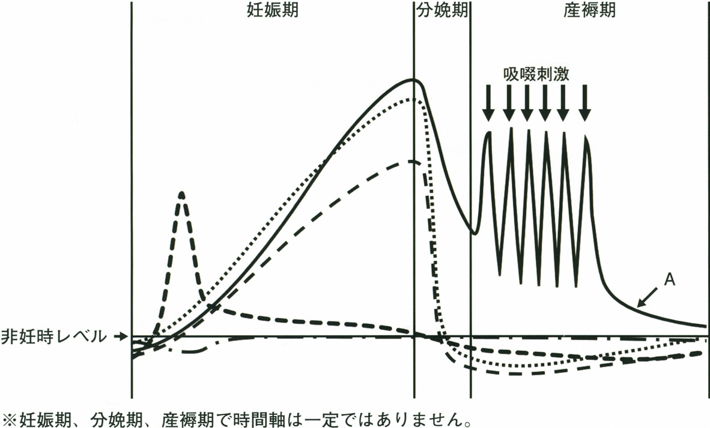
ａ エストロゲン
ｂ プロラクチン
ｃ プロゲステロン
ｄ 甲状腺刺激ホルモン
ｅ 絨毛性ゴナドトロピン
✅
ｂ プロラクチン
分娩後に低下せず、産褥期に授乳刺激で高値を維持するのはプロラクチンのみである。
📈 グラフの読み方（各ホルモンの経時変化）
実際のグラフは参照できないため、5つの曲線の形を整理する。分娩を境に急落するか否かが最大の鑑別点である。hCG（絨毛性ゴナドトロピン）：妊娠8〜10週に鋭いピーク → 以後急減して低値で推移 → 分娩後消失
エストロゲン・プロゲステロン：妊娠末期まで一貫して増加 → 胎盤娩出とともに急激に低下
プロラクチン：妊娠経過とともに漸増 → 分娩後も低下せず、吸啜刺激により高値を維持
TSH：ほぼ横ばい（妊娠初期にhCGのTSH様作用でごく軽度低下する程度）
したがって産褥期に高値を保つ実線A＝プロラクチンと判断できる。
□ 選択肢の検討
| 選択肢 | グラフの特徴 |
|---|---|
| ａ エストロゲン | 胎盤娩出で急落する |
| ｂ プロラクチン | 産褥期に高値を維持（授乳による吸啜刺激で分泌↑） |
| ｃ プロゲステロン | 胎盤娩出で急落する |
| ｄ 甲状腺刺激ホルモン | 大きな変動を示さない |
| ｅ 絨毛性ゴナドトロピン | 妊娠8〜10週にピークを作る特徴的な形 |
🎯 国試ポイント
産褥期に無月経・無排卵となる（授乳性無月経）のは、高プロラクチン血症がGnRHパルスを抑制するため。妊娠中に乳汁分泌が起こらないのは、高濃度のエストロゲン・プロゲステロンがプロラクチンの乳腺への作用を抑制しているため。分娩・胎盤娩出でこれらが急落すると、プロラクチンの作用が顕在化して乳汁分泌が始まる。
Q.45(115F-45)92%
32 歳の女性。市販の妊娠検査薬で陽性となったため来院した。月経周期は20 日～60 日と不規則で、最終月経開始日は受診日の10 週前であった。基礎体温は記録していない。既往歴に特記すべきことはなかった。腟鏡診にて性器出血は認めない。経腟超音波検査にて子宮内に胎児を認め、頭殿長〈CRL〉は14mm（8 週0 日相当）、胎児心拍数は180bpm であった。
妊婦に対する説明で、正しいのはどれか。
妊婦に対する説明で、正しいのはどれか。
ａ 「子宮内感染が疑われます」
ｂ 「胎児は順調に発育しています」
ｃ 「流産する可能性が高いと思います」
ｄ 「入院して安静にする必要があります」
ｅ 「分娩予定日は最終月経から決定します」
✅
ｂ 「胎児は順調に発育しています」
月経周期が不順なためCRLで妊娠週数を修正すべきであり、心拍数180bpmもこの時期には正常である。
📅 月経不順例での妊娠週数の決定
最終月経基準では妊娠10週だが、月経周期が20〜60日と不順であり、排卵日（＝受精日）が最終月経から一定の日数後とは限らない。このような場合は妊娠8〜11週のCRLで妊娠週数・分娩予定日を確定する（最も誤差が小さい時期）。
本例はCRL 14mm＝妊娠8週0日相当であり、単に排卵が遅れていた（月経周期が長かった）と解釈でき、胎児発育に異常はない。
💓 胎児心拍数180bpmの解釈
胎芽・胎児の心拍数は妊娠9〜10週ころに170〜180bpmでピークを迎え、以後漸減して妊娠中期以降は110〜160bpm（正常胎児心拍数基線）に落ち着く。したがって妊娠8週で180bpmは生理的な正常値であり、頻脈と誤ってはならない（Q49・Q53参照）。
逆にこの時期に心拍数が100bpm未満（徐脈）だと流産のリスクが高い。
□ 選択肢の検討
| 選択肢 | 評価 |
|---|---|
| ａ 「子宮内感染が疑われます」 | 誤り。発熱・性器出血・破水などの所見がない |
| ｂ 「胎児は順調に発育しています」 | 正しい。CRLで週数を修正すれば正常発育 |
| ｃ 「流産する可能性が高いと思います」 | 誤り。心拍動が確認できており、心拍を確認できた後の流産率は数%まで低下する |
| ｄ 「入院して安静にする必要があります」 | 誤り。切迫流産の徴候（出血・下腹部痛）がない |
| ｅ 「分娩予定日は最終月経から決定します」 | 誤り。月経不順例ではCRLによる修正が必要 |
Q.46(114F-8)90%
胎児神経管閉鎖障害の予防を目的として葉酸を服用する場合、適切な開始時期はどれか。
ａ 妊娠の1 か月以上前
ｂ 妊娠10 週
ｃ 妊娠20 週
ｄ 妊娠30 週
ｅ 妊娠36 週
✅
ａ 妊娠の1 か月以上前
神経管は受精後3〜4週（妊娠5〜6週）に閉鎖するため、葉酸は妊娠前1か月から摂取を開始する。
🧠 神経管閉鎖障害と葉酸
神経管は受精後21〜28日（妊娠5〜6週ころ）に閉鎖する。この時期はまだ妊娠に気づいていないことが多く、妊娠がわかってから葉酸を飲み始めても間に合わない。そのため妊娠の1か月以上前から妊娠3か月（12週）までの間、葉酸を1日400µg付加摂取することが推奨されている（サプリメント等の狭義の葉酸として）。
神経管閉鎖障害＝二分脊椎・無脳症・脳瘤。母体血清・羊水中のAFP高値が開放性病変のマーカーとなる。
□ 葉酸摂取のリスク因子と用量
| 対象 | 推奨量 |
|---|---|
| 一般の妊娠可能女性 | 400µg/日（食事＋サプリメント） |
| 神経管閉鎖障害児の妊娠・分娩歴 | 4mg/日（高用量） |
| 抗てんかん薬（バルプロ酸・カルバマゼピン）内服中 | 高用量が推奨される |
| 葉酸代謝拮抗薬（メトトレキサート） | 妊娠前に中止し葉酸を補充 |
🎯 国試ポイント
「妊娠に気づく前に完了する現象」がキーワード。器官形成期（妊娠4〜7週＝絶対過敏期）の薬剤曝露も同様の理由で問題となる。妊娠前カウンセリング（プレコンセプションケア）では、葉酸・風疹抗体・血糖管理・禁煙禁酒を確認する。
Q.47(114F-33)📷 画像3択19%
胎児の超音波断層像（①～⑤）を示す。
胎児推定体重を測定する際に用いるのはどれか。3 つ選べ。
胎児推定体重を測定する際に用いるのはどれか。3 つ選べ。
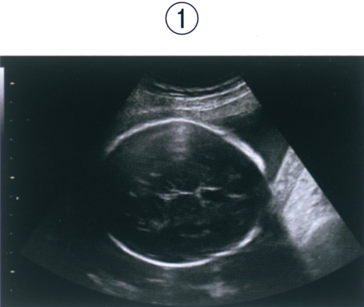
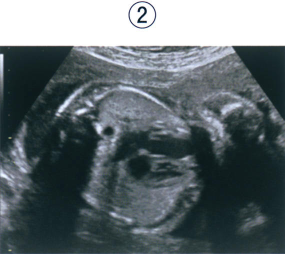
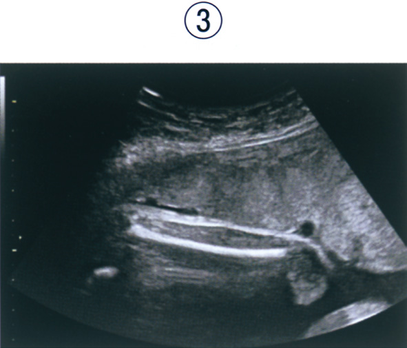

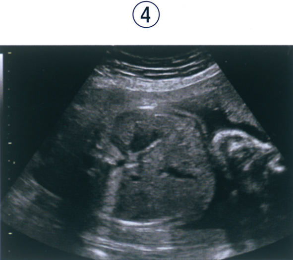
ａ ①
ｂ ②
ｃ ③
ｄ ④
ｅ ⑤
✅
ａ ①
ｃ ③
ｄ ④
胎児推定体重〈EFW〉は児頭大横径〈BPD〉・腹部周囲長〈AC〉・大腿骨長〈FL〉の3計測値から算出する。
📸 胎児推定体重〈EFW〉に用いる3つの計測断面
実際の画像は参照できないため、3つの標準断面の読み方を示す。① 児頭大横径〈BPD〉：
側脳室・視床・透明中隔腔が描出される水平断。小脳が写ってはいけない。頭蓋骨外側〜内側の距離を計測する。
② 腹部周囲長〈AC〉：
胃胞と臍静脈（門脈臍部）が同一断面に描出される腹部水平断。腎臓が写らない高さ。胎児の栄養状態を最もよく反映する。
③ 大腿骨長〈FL〉：
大腿骨の骨幹部全長が水平に描出される断面。骨端軟骨は含めない。
この3者を日本超音波医学会の式に代入してEFW（g）を求める。
□ EFWに用いない計測
| 計測 | 用途 |
|---|---|
| 頭殿長〈CRL〉 | 妊娠8〜11週の週数決定に用いる。EFWには使わない |
| 羊水ポケット・AFI | 羊水量の評価。EFWには使わない |
| 臍帯動脈血流波形〈PI・RI〉 | 胎盤機能の評価。EFWには使わない |
| 小脳横径〈TCD〉 | 週数推定に有用だがEFWの式には含まれない |
🎯 国試ポイント
EFW ＝ BPD ＋ AC ＋ FL（＋施設によりFTA〈体幹前後径×横径〉）。EFWが−1.5SD未満なら胎児発育不全〈FGR〉。FGRではまずACの発育が鈍る（頭部は保たれる＝brain sparing effect）。
正答率19%と極めて低く、断面の同定が難しいことを示す問題である。
Q.48(113A-15)92%
30 歳の女性。無月経となり市販の妊娠反応検査が陽性のため来院した。月経周期は30 ～50 日型で、最終月経から算出した妊娠週数は10 週0 日であった。超音波検査で子宮内に心拍を有する胎児を認めるが、頭殿長は妊娠8 週2 日相当である。
現時点の対応として適切なのはどれか。
現時点の対応として適切なのはどれか。
ａ 自宅安静を指示する。
ｂ 妊娠週数を修正する。
ｃ 食事療法を指導する。
ｄ 母体の血糖値を測定する。
ｅ 絨毛検査の必要性を説明する。
✅
ｂ 妊娠週数を修正する。
月経周期が不順な症例では、妊娠8〜11週のCRLを基準に妊娠週数と分娩予定日を修正する。
📅 CRLによる妊娠週数の修正
月経周期30〜50日型＝排卵が遅れる（周期後半が一定14日なので、周期が長いほど排卵が遅い）。最終月経基準の週数は実際より進んで計算されてしまう。本例では最終月経基準10週0日に対しCRL 8週2日相当であり、約12日のずれは排卵の遅れで説明できる。
妊娠8〜11週のCRLは個体差が小さく最も正確に週数を反映するため、この時期にCRLで妊娠週数・分娩予定日を確定（修正）する。心拍動も確認されており胎児発育不全ではない。
□ 選択肢の検討
| 選択肢 | 評価 |
|---|---|
| ａ 自宅安静を指示する。 | 不要。出血・腹痛など切迫流産の徴候がない |
| ｂ 妊娠週数を修正する。 | 正しい |
| ｃ 食事療法を指導する。 | 不要。糖代謝異常・肥満などの記載がない |
| ｄ 母体の血糖値を測定する。 | 不要。この時期の胎児発育遅延を糖尿病で説明する根拠がない |
| ｅ 絨毛検査の必要性を説明する。 | 不適切。染色体異常を疑う所見がなく、侵襲的検査を安易に勧めてはならない |
🎯 国試ポイント
「CRLが週数より小さい」ときの考え方：① まず排卵の遅れ（月経不順）による週数のずれを疑い、CRLで修正する
② 週数が確実なのにCRLが著しく小さい・心拍がない → 稽留流産
③ 妊娠中期以降のEFW低値なら胎児発育不全〈FGR〉
Q.49(113C-13)79%
妊娠中の超音波検査所見について正しいのはどれか。
ａ 妊娠3 週で胎囊を認める。
ｂ 妊娠4 週で胎芽の心拍動を確認できる。
ｃ 妊娠9 週の胎児心拍数は160 ～180/ 分である。
ｄ 妊娠10 週に児頭大横径〈BPD〉で分娩予定日を修正する。
ｅ 妊娠15 週で生理的臍帯ヘルニアを観察できる。
✅
ｃ 妊娠9 週の胎児心拍数は160 ～180/ 分である。
胎児心拍数は妊娠9〜10週ころに170〜180bpmでピークとなり、以後漸減する。
💓 胎児心拍数の推移
妊娠6週 ：約100〜120bpm（心拍動の出現）妊娠9〜10週：170〜180bpmでピーク
妊娠中期以降：漸減して110〜160bpm（正常基線）に落ち着く
胎児の心拍数が高いのは、1回拍出量が小さく心拍数で心拍出量を確保しているためで、妊娠経過とともに副交感神経（迷走神経）が発達して徐々に低下する。
□ 選択肢の検討
| 選択肢 | 評価 |
|---|---|
| ａ 妊娠3 週で胎囊を認める。 | 誤り。GSが見えるのは妊娠4週後半〜5週（妊娠3週は着床の時期） |
| ｂ 妊娠4 週で胎芽の心拍動を確認できる。 | 誤り。心拍動確認は妊娠6〜7週 |
| ｃ 妊娠9 週の胎児心拍数は160 ～180/ 分である。 | 正しい |
| ｄ 妊娠10 週に児頭大横径〈BPD〉で分娩予定日を修正する。 | 誤り。妊娠10週ではCRLを用いる。BPDは12週以降 |
| ｅ 妊娠15 週で生理的臍帯ヘルニアを観察できる。 | 誤り。生理的臍帯ヘルニアは妊娠6〜11週（受精後6〜10週）にみられ、12週までに腹腔内へ還納される。12週以降も残存すれば臍帯ヘルニア（病的） |
💡 覚え方
妊娠初期のマイルストーンは「5週GS・6週心拍・8〜11週CRL・12週から BPD」。生理的臍帯ヘルニアは「中腸が回転して戻るまでの一時的な出来事、12週で終了」。
Q.50(113C-66)92%
卵膜の構成について母体側から胎児側の順で正しいのはどれか。
ａ 絨毛膜 → 羊膜 → 脱落膜
ｂ 絨毛膜 → 脱落膜 → 羊膜
ｃ 脱落膜 → 絨毛膜 → 羊膜
ｄ 脱落膜 → 羊膜 → 絨毛膜
ｅ 羊膜 → 絨毛膜 → 脱落膜
ｆ 羊膜 → 脱落膜 → 絨毛膜
✅
ｃ 脱落膜 → 絨毛膜 → 羊膜
卵膜は母体側から脱落膜・絨毛膜・羊膜の3層からなる（胎児側から数えれば羊膜・絨毛膜・脱落膜）。
🧬 卵膜の3層構造
胎児側（内側）→ 母体側（外側）の順に：① 羊膜〈amnion〉：最内層。羊水に接する。血管をもたない薄い膜。臍帯表面も覆う
② 絨毛膜〈chorion〉：中間層。胎児（栄養膜）由来
③ 脱落膜〈decidua〉：最外層。唯一の母体由来組織（子宮内膜が妊娠により変化したもの）
本問は母体側からと問うているので、脱落膜 → 絨毛膜 → 羊膜が正答。
💡 覚え方
「羊（羊膜）・絨（絨毛膜）・脱（脱落膜）」を内側から。羊水に接する側が羊膜、子宮壁に接する側が母体由来の脱落膜、と両端から考えれば迷わない。設問が「母体側から」か「胎児側から」かで正答が逆になるので、必ず問い方を確認すること（Q67と対比）。
🎯 国試ポイント
双胎の膜性診断もこの構造の理解が前提。・1絨毛膜1羊膜〈MM〉：隔壁なし（臍帯相互巻絡のリスク最大）
・1絨毛膜2羊膜〈MD〉：隔壁は羊膜2層のみで薄い（T sign、TTTSのリスク）
・2絨毛膜2羊膜〈DD〉：隔壁は羊膜2層＋絨毛膜2層で厚い（λ sign／twin peak sign）
Q.51(113E-5)78%
妊娠による母体の生理的変化について正しいのはどれか。
ａ 血圧は上昇する。
ｂ 循環血液量は減少する。
ｃ 機能的残気量は減少する。
ｄ 末梢血の白血球数は減少する。
ｅ インスリン感受性は亢進する。
✅
ｃ 機能的残気量は減少する。
増大子宮による横隔膜挙上で機能的残気量・残気量は減少する（一回換気量は増加する）。
🫁 妊娠中の呼吸機能の変化
増加するもの：一回換気量（約40%↑）・分時換気量・肺胞換気量→ プロゲステロンが呼吸中枢を刺激し換気が亢進
→ PaCO₂が低下（約30mmHg）＝代償性の呼吸性アルカローシス。腎からのHCO₃⁻排泄で代償される
減少するもの：機能的残気量〈FRC〉・残気量・予備呼気量
→ 増大子宮により横隔膜が約4cm挙上するため
不変：呼吸数（わずかに増加）、肺活量、1秒率
FRCの減少は酸素の予備能低下を意味し、妊婦は麻酔導入時に低酸素血症に陥りやすい。
□ 選択肢の検討
| 選択肢 | 評価 |
|---|---|
| ａ 血圧は上昇する。 | 誤り。末梢血管抵抗低下により中期に最低となる |
| ｂ 循環血液量は減少する。 | 誤り。40〜50%増加 |
| ｃ 機能的残気量は減少する。 | 正しい。横隔膜挙上による |
| ｄ 末梢血の白血球数は減少する。 | 誤り。増加する |
| ｅ インスリン感受性は亢進する。 | 誤り。インスリン抵抗性が増大（＝感受性は低下） |
□ 妊娠による母体の生理的変化（総まとめ）
| 項目 | 妊娠中の変化 |
|---|---|
| 循環血液量 | 増加（40〜50%。血漿量↑＞赤血球量↑） |
| ヘモグロビン・ヘマトクリット | 低下（水血症＝生理的貧血） |
| 心拍出量・心拍数 | 増加（心拍出量30〜50%↑） |
| 血圧 | 低下（末梢血管抵抗↓。妊娠中期に最低、末期に非妊時へ戻る） |
| 糸球体濾過量〈GFR〉 | 増加（約50%↑） |
| 血清クレアチニン・BUN・尿酸 | 低下（GFR↑による） |
| 白血球数 | 増加 |
| 血小板 | やや低下〜不変（希釈性） |
| フィブリノゲン・凝固因子 | 増加（過凝固状態 → 血栓症リスク） |
| 血漿浸透圧・血清アルブミン・総蛋白 | 低下（希釈による） |
| 総コレステロール・中性脂肪 | 増加 |
| ALP | 増加（胎盤性ALP） |
| 一回換気量・分時換気量 | 増加（プロゲステロンの呼吸中枢刺激）→ 軽度の呼吸性アルカローシス |
| 機能的残気量・残気量 | 低下（横隔膜挙上による） |
| インスリン抵抗性 | 増大（hPL・プロゲステロン・コルチゾール） |
| 腟内pH | 低下（Döderlein桿菌の増加により酸性化） |
Q.52(113F-20)
胎児・胎盤について最も早期に起こるのはどれか。
ａ 胎盤の完成
ｂ 頭髪の発生
ｃ 肺胞の形成
ｄ 精巣の下降
ｅ 腎臓の尿産生
✅
ｅ 腎臓の尿産生
胎児腎の尿産生は妊娠9〜12週に始まり、選択肢の中で最も早い事象である。
⏱ 胎児発育のタイムライン
妊娠9〜12週：胎児腎の尿産生開始（以後、羊水の主成分は胎児尿となる）妊娠15〜16週：胎盤の完成
妊娠20週ころ：頭髪・爪の発生、胎脂の産生
妊娠24〜28週：Ⅱ型肺胞上皮細胞による肺サーファクタント産生開始（肺胞の形成は妊娠24週以降〜生後8歳ころまで続く）
妊娠28〜32週：精巣の下降（陰囊内へ）
したがって最も早期は腎臓の尿産生。
□ 選択肢の検討
| 選択肢 | 時期 |
|---|---|
| ａ 胎盤の完成 | 妊娠15〜16週 |
| ｂ 頭髪の発生 | 妊娠20週ころ |
| ｃ 肺胞の形成 | 妊娠24週以降（肺胞期は出生後も続く） |
| ｄ 精巣の下降 | 妊娠28〜32週 |
| ｅ 腎臓の尿産生 | 妊娠9〜12週（最も早い） |
🎯 国試ポイント
妊娠中期以降の羊水の主体は胎児尿（産生）と胎児の嚥下（吸収）で決まる。・羊水過少 → 腎無形成・尿路閉塞（Potter症候群）・破水・胎盤機能不全
・羊水過多 → 食道閉鎖・十二指腸閉鎖・無脳症（嚥下障害）・母体糖尿病
Q.53(112C-14)41%
正常胎芽・胎児において心拍数が最も多い時期はどれか。
ａ 妊娠6 週
ｂ 妊娠9 週
ｃ 妊娠16 週
ｄ 妊娠28 週
ｅ 妊娠40 週
✅
ｂ 妊娠9 週
胎児心拍数は妊娠9〜10週に170〜180bpmでピークを迎え、以後漸減する。
💓 胎児心拍数のピーク
妊娠6週で心拍動が出現した当初は約100〜120bpmと比較的遅く、急速に増加して妊娠9〜10週に170〜180bpmでピークに達する。その後は迷走神経（副交感神経）の発達に伴い漸減し、妊娠中期以降は110〜160bpm（正常胎児心拍数基線）となる。
妊娠末期にかけてさらにやや低下する。
□ 時期別の胎児心拍数
| 時期 | 心拍数 | 備考 |
|---|---|---|
| 妊娠6週 | 約100〜120bpm | 心拍動の出現。100未満は流産のリスク |
| 妊娠9週 | 170〜180bpm | ピーク |
| 妊娠16週 | 約150〜160bpm | 漸減期 |
| 妊娠28週 | 約140bpm | |
| 妊娠40週 | 約130〜140bpm | 正常基線110〜160bpm |
🎯 国試ポイント
正答率41%と低い。「胎児は小さいほど心拍が速い」という直感（新生児＞乳児＞小児＞成人）を胎芽期にまで延長して妊娠6週が最速と誤答しがちだが、妊娠6週はまだ心拍動が出現した直後で100〜120bpmと遅い点が要注意（Q45も参照）。Q.54(111B-4)53%
正常妊娠で妊娠初期に比べ後期に低下するのはどれか。
ａ 循環血液量
ｂ 空腹時血糖
ｃ 血中プロラクチン
ｄ 血中コレステロール
ｅ 血中アルカリフォスファターゼ
✅
ｂ 空腹時血糖
妊娠後期は胎児へのグルコース供給と母体の脂質利用により空腹時血糖が低下する（食後血糖はむしろ上昇する）。
🍬 妊娠中の糖代謝
妊娠後期にはhPL・プロゲステロン・コルチゾール・プロラクチンによりインスリン抵抗性が増大する。この一見矛盾する2つの現象が同時に起こる：① 空腹時血糖は低下
胎児が母体血糖を絶えず消費する（促通拡散でグルコースを取り込む）。また母体は脂質をエネルギー源として利用し（accelerated starvation）、空腹時には容易にケトーシスに傾く。
② 食後血糖は上昇し遷延する
インスリン抵抗性のため食後高血糖が持続し、胎児へグルコースを送りやすくする。
この生理的変化が破綻したものが妊娠糖尿病〈GDM〉である。
□ 選択肢の検討
| 選択肢 | 妊娠後期の変化 |
|---|---|
| ａ 循環血液量 | 増加 |
| ｂ 空腹時血糖 | 低下 |
| ｃ 血中プロラクチン | 増加 |
| ｄ 血中コレステロール | 増加 |
| ｅ 血中アルカリフォスファターゼ | 増加（胎盤性ALP） |
🎯 国試ポイント
妊娠中の75gOGTT診断基準（GDM）は空腹時92・1時間値180・2時間値153mg/dL のいずれか1点以上。非妊時より空腹時の基準値が厳しい（92mg/dL）のは、本来この時期の空腹時血糖が低いはずだからである。Q.55(111B-19)53%
妊娠20 週の胎児について正しいのはどれか。
ａ 網膜が完成する。
ｂ 造血は主に骨髄で行われる。
ｃ 生理的臍帯ヘルニアを認める。
ｄ 肺では肺胞の発達が完成する。
ｅ 心拍出量は右心室からが左心室からよりも多い。
✅
ｅ 心拍出量は右心室からが左心室からよりも多い。
胎児期は右心室の拍出量が左心室を上回る（右室優位）。
🫀 胎児の右室優位
胎児では肺循環をほとんど使わず、右心室から拍出された血液の大部分が動脈管を通って下行大動脈へ流れる（＝右心室が全身へ血液を送る主役）。このため右心室の拍出量は左心室の約1.3倍（右室:左室≒6:4）で、胎児心臓は右室優位（生後しばらく右室肥大の心電図所見が残る）。
出生後は肺血管抵抗が低下して左心室が体循環を担うようになり、左室優位へ転換する。
□ 選択肢の検討
| 選択肢 | 評価 |
|---|---|
| ａ 網膜が完成する。 | 誤り。網膜（黄斑）の成熟は妊娠後期〜出生後まで続く。未熟児網膜症が問題となるのはこのため |
| ｂ 造血は主に骨髄で行われる。 | 誤り。造血の場は卵黄囊（〜妊娠8週）→ 肝・脾（妊娠中期の主体）→ 骨髄（妊娠後期以降）。妊娠20週は肝臓が主体 |
| ｃ 生理的臍帯ヘルニアを認める。 | 誤り。妊娠6〜11週の一時的現象で、12週までに還納される |
| ｄ 肺では肺胞の発達が完成する。 | 誤り。肺胞期は妊娠24週以降に始まり出生後8歳ころまで続く |
| ｅ 心拍出量は右心室からが左心室からよりも多い。 | 正しい |
💡 覚え方
胎児造血の場は「卵（卵黄囊）→ 肝（肝・脾）→ 骨（骨髄）」と移動する。妊娠20週＝中期は肝臓が主役。
Q.56(111G-4)📷 画像83%
妊娠初期の経腟超音波像（①～⑤）を示す。
分娩予定日を決定するために有用な計測部位はどれか。
分娩予定日を決定するために有用な計測部位はどれか。
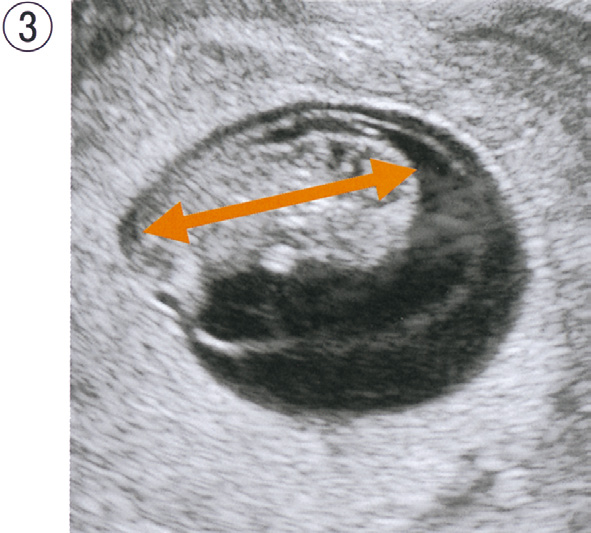
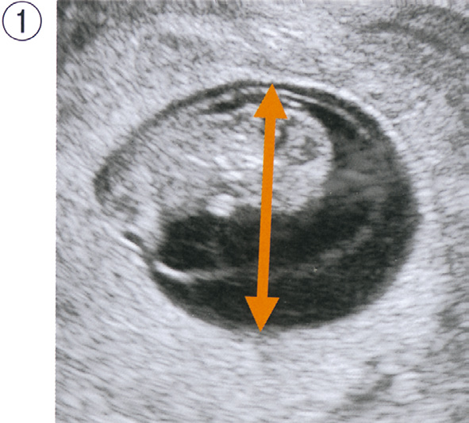
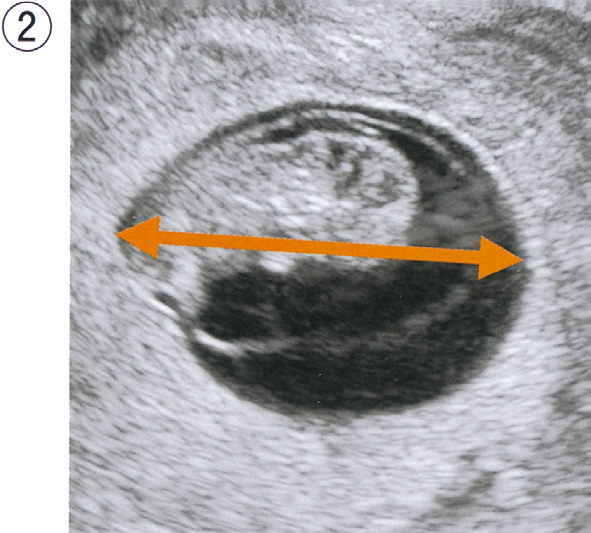
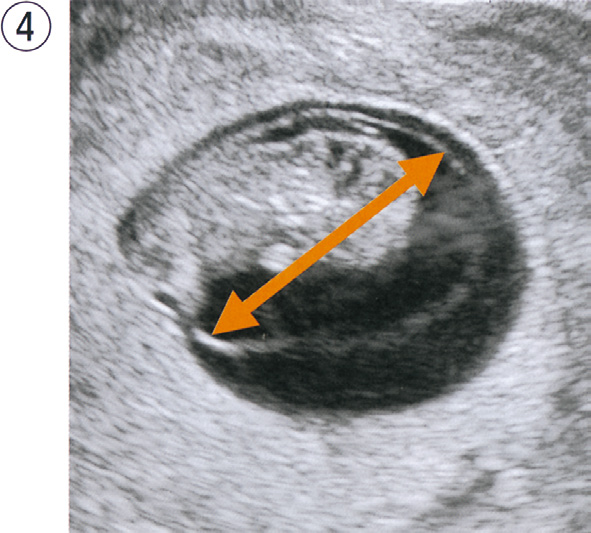
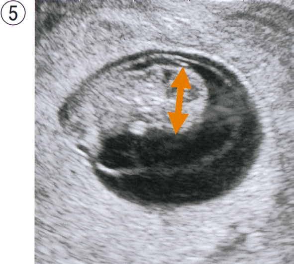
ａ ①
ｂ ②
ｃ ③
ｄ ④
ｅ ⑤
✅
ｃ ③
分娩予定日の決定（修正）には妊娠8〜11週の頭殿長〈CRL〉を用いる。
📸 頭殿長〈CRL〉の計測断面
実際の画像は参照できないため、CRL計測の要点を示す。CRL〈crown-rump length〉は胎芽・胎児の頭頂（crown）から殿部（rump）までの直線距離。
・胎児が最も伸展した（屈曲していない）正中矢状断で計測する
・四肢や卵黄囊を含めない
・妊娠8〜11週（CRL 15〜60mm）で個体差が最小であり、この時期のCRLで分娩予定日を確定（修正）する
□ 妊娠週数の推定に用いる計測値
| 計測値 | 時期 | 評価 |
|---|---|---|
| 胎囊〈GS〉径 | 妊娠4〜6週 | 誤差が大きく予定日決定には不適 |
| 頭殿長〈CRL〉 | 妊娠8〜11週 | 最も正確。分娩予定日の決定・修正に用いる |
| 児頭大横径〈BPD〉 | 妊娠12週以降 | 週数が進むほど個体差が大きくなる |
| 大腿骨長〈FL〉・腹囲〈AC〉 | 妊娠中期以降 | 主に胎児推定体重の算出に用いる |
🎯 国試ポイント
分娩予定日の決定：① Naegele概算法：最終月経初日＋280日（月経周期28日・整の場合のみ有効）
② 月経不順・排卵日不明なら妊娠8〜11週のCRLで修正（Q45・Q48参照）
③ ART妊娠では胚移植日から正確に算出できる
Q.57(111G-17)69%
羊水の産生および吸収への関与が最も小さいのはどれか。
ａ 羊 膜
ｂ 胎児肺
ｃ 胎児腎臓
ｄ 胎児直腸
ｅ 胎児皮膚
✅
ｄ 胎児直腸
羊水の産生・吸収は胎児尿・肺液・嚥下・羊膜・皮膚が担い、胎児直腸（胎便排泄）はほぼ関与しない。
💧 羊水の動態
産生（羊水を増やす）・胎児尿：妊娠中期以降の主体（1日500〜1,200mL）
・胎児肺液：1日数百mLを気道から分泌
・羊膜からの分泌（妊娠初期の主体）
・妊娠初期は胎児皮膚が角化していないため皮膚を介した水分移動もある（20週以降は角化して減少）
吸収（羊水を減らす）
・胎児の嚥下：1日200〜500mL（最大の吸収経路）
・卵膜・臍帯を介した母体血への吸収
胎児直腸からの胎便排泄は通常は分娩前には起こらず（起これば羊水混濁＝胎児仮死のサイン）、羊水量の調節にはほとんど関与しない。
□ 羊水量異常の原因
| 異常 | 原因 |
|---|---|
| 羊水過多 | 嚥下できない：食道閉鎖・十二指腸閉鎖・無脳症・重症筋無力症 尿が多い：母体糖尿病（胎児高血糖 → 浸透圧利尿）、双胎間輸血症候群の受血児 |
| 羊水過少 | 尿が作れない：腎無形成〈Potter症候群〉・多囊胞性異形成腎・後部尿道弁 その他：前期破水・胎盤機能不全（FGR）・過期妊娠・NSAIDs（動脈管早期閉鎖と併せて） |
🎯 国試ポイント
羊水量の評価は羊水ポケット〈AFP〉2〜8cm、羊水指数〈AFI〉5〜24cmが正常。妊娠20週以降の羊水はほぼ胎児尿なので、羊水過少をみたら胎児腎・尿路の評価と破水の除外を行う。
Q.58(110B-37)2択75%
正常な胎児付属物について正しいのはどれか。2 つ選べ。
ａ 羊水は淡黄色透明である。
ｂ 臍帯内の静脈は2 本である。
ｃ 妊娠末期の胎盤重量は約200g である。
ｄ 分娩時臍帯動脈血pH は7.00 未満である。
ｅ 卵膜の3 層構造で最も内側の層は羊膜である。
✅
ａ 羊水は淡黄色透明である。
ｅ 卵膜の3 層構造で最も内側の層は羊膜である。
正常羊水は淡黄色透明で、卵膜は胎児側（内側）から羊膜・絨毛膜・脱落膜の順に並ぶ。
🧬 胎児付属物の正常所見
羊水：淡黄色透明、弱アルカリ性（pH 7.0〜8.5）。妊娠末期で約500〜800mL。緑色（胎便）・血性・混濁は異常臍帯：動脈2本＋静脈1本。長さ約50cm
胎盤：妊娠末期で約500g（児体重の約1/6）、直径約20cm、中央部の厚さ約2〜3cm
卵膜：内側（胎児側）から羊膜 → 絨毛膜 → 脱落膜
臍帯動脈血pH：正常は7.25以上。7.00未満はacidemia（新生児仮死・脳性麻痺のリスク）
□ 選択肢の検討
| 選択肢 | 評価 |
|---|---|
| ａ 羊水は淡黄色透明である。 | 正しい |
| ｂ 臍帯内の静脈は2 本である。 | 誤り。静脈は1本、動脈が2本 |
| ｃ 妊娠末期の胎盤重量は約200g である。 | 誤り。約500g |
| ｄ 分娩時臍帯動脈血pH は7.00 未満である。 | 誤り。正常は7.25以上。7.00未満は重症の胎児アシドーシス |
| ｅ 卵膜の3 層構造で最も内側の層は羊膜である。 | 正しい |
Q.59(110E-29)45%
胎児発育について正しいのはどれか。
ａ 妊娠20 週以前には四肢の運動を認めない。
ｂ 妊娠32 週以前には呼吸様運動を認めない。
ｃ 妊娠36 週以前には一過性頻脈を認めない。
ｄ 妊娠32 週に比べ正期産期には胎脂の量が減少する。
ｅ 妊娠32 週に比べ正期産期には身体全体に占める頭部の比率が増加する。
✅
ｄ 妊娠32 週に比べ正期産期には胎脂の量が減少する。
胎脂は妊娠中期から増え、妊娠末期（正期産期）に向けて減少する。
👶 胎児発育のマイルストーン
四肢運動：妊娠8〜9週から超音波で観察可能（母体が自覚するのは18〜20週）呼吸様運動：妊娠10〜11週ころから観察される
一過性頻脈〈acceleration〉：自律神経の発達により妊娠28〜32週ころから出現。NSTのreactiveの判定はこの成熟が前提（早期産児ではnon-reactiveでも正常のことがある）
胎脂：妊娠20週ころから皮膚を覆い、妊娠36週ころ最多 → 正期産期に向けて減少。過期産児では胎脂が消失し皮膚が乾燥・落屑する
頭部/身体比：妊娠が進むほど身体の発育が頭部を上回り、頭部の比率は低下する
□ 選択肢の検討
| 選択肢 | 評価 |
|---|---|
| ａ 妊娠20 週以前には四肢の運動を認めない。 | 誤り。妊娠8〜9週から観察できる |
| ｂ 妊娠32 週以前には呼吸様運動を認めない。 | 誤り。妊娠10〜11週から観察できる |
| ｃ 妊娠36 週以前には一過性頻脈を認めない。 | 誤り。妊娠28〜32週ころから出現する |
| ｄ 妊娠32 週に比べ正期産期には胎脂の量が減少する。 | 正しい |
| ｅ 妊娠32 週に比べ正期産期には身体全体に占める頭部の比率が増加する。 | 誤り。頭部の比率は低下する（身体の発育が頭部を上回る） |
🎯 国試ポイント
過期妊娠児（過熟児）の特徴：胎脂の消失・皮膚の乾燥と落屑・皮下脂肪の減少・爪が長い・羊水過少・羊水混濁。正答率45%と低く、「胎脂は末期ほど多い」という誤解が多い。
Q.60(108F-2)96%
妊娠により母体で増加するのはどれか。
ａ 残気量
ｂ 心拍出量
ｃ 血中ヘモグロビン値
ｄ 血清アルブミン値
ｅ 血清クレアチニン値
✅
ｂ 心拍出量
妊娠中は循環血液量の増加と心拍数増加により、心拍出量が30〜50%増加する。
🫀 妊娠中の循環動態
心拍出量は妊娠初期から増加し始め、妊娠中期（28〜32週ころ）に非妊時の30〜50%増でピークに達する。内訳は1回拍出量の増加（循環血液量↑）＋心拍数の増加（10〜20/分↑）。
増加した血流は主に子宮（胎盤）・腎・皮膚へ分配される。
分娩直後は子宮収縮による自己輸血（auto-transfusion）と大静脈圧迫の解除でさらに心拍出量が増加し、心疾患合併妊婦では分娩直後が最も心不全を起こしやすい。
□ 選択肢の検討
| 選択肢 | 変化 |
|---|---|
| ａ 残気量 | 減少（横隔膜挙上） |
| ｂ 心拍出量 | 増加（30〜50%↑） |
| ｃ 血中ヘモグロビン値 | 低下（水血症） |
| ｄ 血清アルブミン値 | 低下（希釈による。膠質浸透圧↓ → 生理的浮腫） |
| ｅ 血清クレアチニン値 | 低下（GFR↑） |
□ 妊娠による母体の生理的変化（総まとめ）
| 項目 | 妊娠中の変化 |
|---|---|
| 循環血液量 | 増加（40〜50%。血漿量↑＞赤血球量↑） |
| ヘモグロビン・ヘマトクリット | 低下（水血症＝生理的貧血） |
| 心拍出量・心拍数 | 増加（心拍出量30〜50%↑） |
| 血圧 | 低下（末梢血管抵抗↓。妊娠中期に最低、末期に非妊時へ戻る） |
| 糸球体濾過量〈GFR〉 | 増加（約50%↑） |
| 血清クレアチニン・BUN・尿酸 | 低下（GFR↑による） |
| 白血球数 | 増加 |
| 血小板 | やや低下〜不変（希釈性） |
| フィブリノゲン・凝固因子 | 増加（過凝固状態 → 血栓症リスク） |
| 血漿浸透圧・血清アルブミン・総蛋白 | 低下（希釈による） |
| 総コレステロール・中性脂肪 | 増加 |
| ALP | 増加（胎盤性ALP） |
| 一回換気量・分時換気量 | 増加（プロゲステロンの呼吸中枢刺激）→ 軽度の呼吸性アルカローシス |
| 機能的残気量・残気量 | 低下（横隔膜挙上による） |
| インスリン抵抗性 | 増大（hPL・プロゲステロン・コルチゾール） |
| 腟内pH | 低下（Döderlein桿菌の増加により酸性化） |
Q.61(108G-17)67%
羊水検査で診断できるのはどれか。
ａ 胎児小頭症
ｂ 胎児発育不全
ｃ 胎児溶血性疾患
ｄ 先天性食道閉鎖症
ｅ 先天性横隔膜ヘルニア
✅
ｃ 胎児溶血性疾患
羊水検査では羊水中ビリルビン（ΔOD450）や胎児細胞の血液型解析により胎児溶血性疾患を評価できる。
💉 羊水検査でわかること
妊娠15〜16週以降に経腹的に羊水を穿刺し、以下を調べる。・胎児細胞の染色体分析（核型）・遺伝子検査（最も一般的な目的）
・羊水中ビリルビン（ΔOD450法） → 胎児溶血性疾患（血液型不適合妊娠）の重症度評価
・AFP・アセチルコリンエステラーゼ → 開放性神経管閉鎖障害
・レシチン/スフィンゴミエリン比〈L/S比〉・マイクロバブルテスト → 胎児肺成熟度
・羊水培養 → 子宮内感染
一方、形態異常（小頭症・食道閉鎖・横隔膜ヘルニアなど）や胎児発育の評価は超音波検査の役割である。
□ 選択肢の検討
| 選択肢 | 診断法 |
|---|---|
| ａ 胎児小頭症 | 超音波検査（BPD・頭囲の計測） |
| ｂ 胎児発育不全 | 超音波検査（胎児推定体重） |
| ｃ 胎児溶血性疾患 | 羊水検査（ΔOD450）。近年は中大脳動脈最高血流速度〈MCA-PSV〉の測定が主流 |
| ｄ 先天性食道閉鎖症 | 超音波検査（羊水過多＋胃胞の欠如） |
| ｅ 先天性横隔膜ヘルニア | 超音波検査（胸腔内の腹部臓器） |
🎯 国試ポイント
血液型不適合妊娠（RhD陰性母体）の管理：① 間接Coombs試験で母体の抗D抗体をスクリーニング
② 抗体陽性なら胎児貧血の評価（MCA-PSVの上昇、羊水ΔOD450）
③ 予防は妊娠28週と分娩後72時間以内の抗Dヒト免疫グロブリン投与（Q151参照）
Q.62(108G-23)79%
生後6 日の健常新生児における循環動態について出生前と比較して正しいのはどれか。
ａ 肺血流量は減少する。
ｂ 左心房圧は上昇する。
ｃ 肺血管抵抗は上昇する。
ｄ 大動脈拡張期圧は低下する。
ｅ 動脈管は開存したままである。
✅
ｂ 左心房圧は上昇する。
出生後は肺血流が増加して肺静脈還流が増えるため、左心房圧が上昇し卵円孔が閉鎖する。
🫀 胎児循環から新生児循環への移行
出生後の変化：① 第一呼吸で肺が拡張 → 肺血管抵抗が急激に低下 → 肺血流量が増加
② 臍帯結紮で低抵抗の胎盤循環が消失 → 体血管抵抗が上昇（大動脈圧・拡張期圧も上昇）
③ 肺静脈還流の増加により左房圧＞右房圧 → 卵円孔が機能的に閉鎖
④ 動脈血酸素分圧の上昇＋PGE₂の減少 → 動脈管が収縮（機能的閉鎖：生後10〜15時間、解剖学的閉鎖：生後2〜3週）
⑤ 静脈管は生後数日で閉鎖（→ 静脈管索）
□ 選択肢の検討
| 選択肢 | 評価 |
|---|---|
| ａ 肺血流量は減少する。 | 誤り。肺血管抵抗が低下して増加する |
| ｂ 左心房圧は上昇する。 | 正しい。肺静脈還流の増加による。これが卵円孔閉鎖の駆動力 |
| ｃ 肺血管抵抗は上昇する。 | 誤り。低下する |
| ｄ 大動脈拡張期圧は低下する。 | 誤り。胎盤（低抵抗回路）の離脱により体血管抵抗が上昇 → 大動脈拡張期圧は上昇 |
| ｅ 動脈管は開存したままである。 | 誤り。生後10〜15時間で機能的閉鎖、生後6日なら閉鎖しているのが正常 |
🎯 国試ポイント
新生児遷延性肺高血圧症〈PPHN〉は、肺血管抵抗が下がらず卵円孔・動脈管を介した右→左シャントが残存する病態。胎便吸引症候群・仮死・敗血症が誘因。上下肢のSpO₂差（動脈管前後差）が診断の手がかり。Q.63(108G-32)2択66%
子宮付属器について正しいのはどれか。2 つ選べ。
ａ 卵管膨大部で受精する。
ｂ 卵管には蠕動運動がみられる。
ｃ 黄体は排卵前から形成される。
ｄ 卵巣は円靱帯で子宮とつながる。
ｅ 原始卵胞は卵巣の髄質層にみられる。
✅
ａ 卵管膨大部で受精する。
ｂ 卵管には蠕動運動がみられる。
受精は卵管膨大部で起こり、卵管は蠕動運動と線毛運動で受精卵を子宮へ輸送する。
🥚 子宮付属器（卵管・卵巣）の基本
子宮付属器＝卵管＋卵巣（および周囲の靱帯）卵管：全長約10cm。子宮側から間質部（約1cm）・峡部・膨大部（約4〜5cm、受精の場・異所性妊娠の好発部位）・采部。壁は粘膜・筋層・漿膜の3層で、筋層の蠕動運動と粘膜の線毛運動により受精卵を子宮へ運ぶ。
卵巣：皮質に卵胞（原始卵胞含む）が存在し、髄質は血管・結合組織。卵巣は固有卵巣索（卵巣固有靱帯）で子宮とつながり、骨盤漏斗靱帯（卵巣提索）で骨盤壁につながる。子宮円索（円靱帯）は子宮角から鼠径管を経て大陰唇に至るもので卵巣とは関係しない。
□ 選択肢の検討
| 選択肢 | 評価 |
|---|---|
| ａ 卵管膨大部で受精する。 | 正しい |
| ｂ 卵管には蠕動運動がみられる。 | 正しい。線毛運動とともに受精卵を輸送 |
| ｃ 黄体は排卵前から形成される。 | 誤り。黄体は排卵後に顆粒膜細胞・莢膜細胞が黄体化して形成される |
| ｄ 卵巣は円靱帯で子宮とつながる。 | 誤り。卵巣と子宮をつなぐのは固有卵巣索 |
| ｅ 原始卵胞は卵巣の髄質層にみられる。 | 誤り。卵胞が存在するのは皮質 |
🎯 国試ポイント
卵管の機能（pick-up・輸送・受精の場）が障害されると卵管性不妊・異所性妊娠をきたす。既往のクラミジア感染・骨盤内炎症性疾患〈PID〉・子宮内膜症が主な原因。Q.64(107E-13)45%
妊娠によって母体で低下するのはどれか。
ａ 腟内pH
ｂ 循環血液量
ｃ 腎糸球体濾過値
ｄ インスリン分泌量
ｅ 血漿フィブリノゲン
✅
ａ 腟内pH
妊娠中はエストロゲンにより腟上皮のグリコーゲンが増加し、Döderlein桿菌が乳酸を産生して腟内pHが低下する。
🦠 妊娠中の腟内環境
エストロゲンの増加により腟上皮が肥厚しグリコーゲンを豊富に含むようになる。これをDöderlein桿菌（腟内乳酸桿菌、Lactobacillus）が分解して乳酸を産生するため、腟内pHは3.8〜4.5とさらに酸性に傾く（＝pHは低下）。
これが腟の自浄作用であり、上行性感染を防いでいる。
なお妊娠中は帯下（腟分泌物）の量自体は増加する。
□ 選択肢の検討
| 選択肢 | 変化 |
|---|---|
| ａ 腟内pH | 低下（酸性化） |
| ｂ 循環血液量 | 増加（40〜50%↑） |
| ｃ 腎糸球体濾過値 | 増加（約50%↑） |
| ｄ インスリン分泌量 | 増加（インスリン抵抗性の増大を代償するため分泌はむしろ増える） |
| ｅ 血漿フィブリノゲン | 増加（過凝固状態） |
🎯 国試ポイント
選択肢ｄが紛らわしい。妊娠中はインスリン抵抗性が増大するが、それを代償するため膵β細胞からのインスリン分泌量はむしろ増加する。この代償が破綻したものが妊娠糖尿病である。Q.65(106B-21)86%
正常経過における妊娠週数と超音波計測値の組合せで誤っているのはどれか。
ａ 妊娠6 週 ────────── 胎囊2cm
ｂ 妊娠10 週 ────────── 頭殿長3cm
ｃ 妊娠22 週 ────────── 児頭大横径8cm
ｄ 妊娠24 週 ────────── 胎児推定体重500g
ｅ 妊娠28 週 ────────── 羊水ポケット4cm
✅
ｃ 妊娠22 週 ────────── 児頭大横径8cm
妊娠22週のBPDは約5.5cmであり、8cmは妊娠32週前後の値である。
📏 妊娠週数と超音波計測値の目安
児頭大横径〈BPD〉の目安：妊娠20週＝約4.7cm、妊娠22週＝約5.5cm、妊娠26週＝約6.6cm、妊娠30週＝約7.6cm、妊娠32週＝約8.2cm、妊娠40週＝約9.2cm
簡便な近似として、妊娠中期以降はBPD（cm）≒ 妊娠月数 ＋ 2 前後、あるいは妊娠週数（週）× 0.25 前後（cm）と覚えるとよい。
□ 選択肢の検討
| 選択肢 | 評価 |
|---|---|
| ａ 妊娠6 週 ─ 胎囊2cm | 正しい。GSは妊娠5週で約1cm、6週で約2cm |
| ｂ 妊娠10 週 ─ 頭殿長3cm | 正しい。CRLは妊娠9週で約2.3cm、10週で約3cm |
| ｃ 妊娠22 週 ─ 児頭大横径8cm | 誤り。22週のBPDは約5.5cm。8cmは32週相当 |
| ｄ 妊娠24 週 ─ 胎児推定体重500g | 正しい。妊娠24週で約600〜700g（500gも許容範囲）。生存限界の妊娠22週で約500gが目安 |
| ｅ 妊娠28 週 ─ 羊水ポケット4cm | 正しい。羊水ポケットの正常は2〜8cm |
💡 覚え方
胎児推定体重の目安：妊娠22週＝500g、28週＝1,000g、32週＝1,800g、36週＝2,500g、40週＝3,000g。「22週で500g（生存限界）」「36週で2,500g（低出生体重の境界）」の2点を軸に覚える。
Q.66(106E-35)2択74%
胎児期の器官形成と臓器の成熟について正しいのはどれか。2 つ選べ。
ａ 心臓は外胚葉から発生する。
ｂ 胎児心拍数は妊娠中期以降に減少する。
ｃ 胎児副腎の胎児層は妊娠早期に退縮する。
ｄ 胎児赤血球の酸素親和性は成人に比べて低い。
ｅ Ⅱ型肺胞上皮細胞は肺表面活性物質を産生する。
✅
ｂ 胎児心拍数は妊娠中期以降に減少する。
ｅ Ⅱ型肺胞上皮細胞は肺表面活性物質を産生する。
胎児心拍数は妊娠9〜10週をピークに以後漸減し、肺サーファクタントはⅡ型肺胞上皮細胞が産生する。
🫁 肺サーファクタントと胎児心拍数
Ⅱ型肺胞上皮細胞が肺表面活性物質〈サーファクタント〉（主成分レシチン＝ジパルミトイルホスファチジルコリン）を産生する。・産生開始は妊娠24週ころ、十分量となるのは妊娠34週以降
・不足すると新生児呼吸窮迫症候群〈RDS〉を発症する
・成熟の指標：L/S比 ≧2.0、マイクロバブルテスト陽性
・早産が予測される場合は母体への副腎皮質ステロイド投与（ベタメタゾン）で産生を促進する
胎児心拍数は妊娠9〜10週に170〜180bpmでピーク → 迷走神経の発達に伴い妊娠中期以降は漸減して110〜160bpmとなる。
□ 選択肢の検討
| 選択肢 | 評価 |
|---|---|
| ａ 心臓は外胚葉から発生する。 | 誤り。心臓は中胚葉由来（外胚葉＝神経系・表皮、内胚葉＝消化管・呼吸器上皮） |
| ｂ 胎児心拍数は妊娠中期以降に減少する。 | 正しい |
| ｃ 胎児副腎の胎児層は妊娠早期に退縮する。 | 誤り。胎児副腎の胎児層（胎児帯）は妊娠中も存在してDHEA-Sを供給し（エストリオール合成の基質）、出生後に退縮する |
| ｄ 胎児赤血球の酸素親和性は成人に比べて低い。 | 誤り。胎児Hb〈HbF〉は2,3-DPGとの結合が弱く酸素親和性が高い（酸素解離曲線が左方移動）。これにより胎盤で母体から酸素を受け取れる |
| ｅ Ⅱ型肺胞上皮細胞は肺表面活性物質を産生する。 | 正しい |
💡 覚え方
胎児Hb（α₂γ₂）は「γ（ガンマ）は貪欲（どんよく）に酸素をつかむ」＝酸素親和性が高い。成人Hb（α₂β₂）はβ鎖に2,3-DPGが結合して酸素を手放しやすい。
Q.67(106G-68)86%
卵膜の3 層構造の順序で正しいのはどれか。
ただし、胎児側から母体側に並べた場合とする。
ただし、胎児側から母体側に並べた場合とする。
ａ 絨毛膜 → 脱落膜 → 羊 膜
ｂ 絨毛膜 → 羊 膜 → 脱落膜
ｃ 脱落膜 → 絨毛膜 → 羊 膜
ｄ 脱落膜 → 羊 膜 → 絨毛膜
ｅ 羊 膜 → 絨毛膜 → 脱落膜
ｆ 羊 膜 → 脱落膜 → 絨毛膜
✅
ｅ 羊 膜 → 絨毛膜 → 脱落膜
卵膜は胎児側から羊膜・絨毛膜・脱落膜の順に並ぶ（脱落膜のみ母体由来）。
🧬 卵膜の3層構造
胎児側（内側） → 母体側（外側）の順に：① 羊膜：羊水に接する最内層。無血管の薄い膜で、臍帯表面も覆う
② 絨毛膜：中間層。胎児（栄養膜）由来
③ 脱落膜：子宮壁に接する最外層。唯一の母体由来組織
本問は胎児側からと問うているので羊膜 → 絨毛膜 → 脱落膜が正答。Q50は「母体側から」と問うており正答が逆（脱落膜 → 絨毛膜 → 羊膜）になる。設問文を必ず確認すること。
💡 覚え方
内側（羊水側）が羊膜、外側（子宮側）が母体由来の脱落膜。両端さえ押さえれば、真ん中は自動的に絨毛膜。「羊水に接するから羊膜」「子宮内膜が脱落するから脱落膜」と語源で覚えると確実。
🎯 国試ポイント
双胎の膜性診断：・DD双胎（2絨毛膜2羊膜）→ 隔壁が厚い、λ sign（twin peak sign）
・MD双胎（1絨毛膜2羊膜）→ 隔壁は羊膜2枚のみで薄い、T sign。双胎間輸血症候群〈TTTS〉のリスク
・MM双胎（1絨毛膜1羊膜）→ 隔壁なし。臍帯相互巻絡のリスク
Q.68(105E-8)94%
胎児循環で正しいのはどれか。
ａ 臍帯静脈は2 本ある。
ｂ 左右心室は卵円孔で交通している。
ｃ Arantius 静脈管は下大静脈に流入する。
ｄ 臍帯動脈血は臍帯静脈血よりも酸素分圧が高い。
ｅ 左心室から拍出された血流の大部分は動脈管を通る。
✅
ｃ Arantius 静脈管は下大静脈に流入する。
静脈管〈Arantius管〉は臍帯静脈血を肝臓を迂回させて下大静脈へ導く。
🫀 胎児循環の3つのシャント
① 静脈管〈Arantius管〉：臍帯静脈 → 下大静脈（肝臓を迂回）② 卵円孔：右心房 → 左心房（右→左シャント。高酸素血を脳・心へ優先供給）
③ 動脈管〈Botallo管〉：肺動脈 → 下行大動脈（右→左シャント。虚脱した肺を迂回）
胎児では肺血管抵抗が高く、右心室から拍出された血液の大部分は動脈管を経て下行大動脈へ流れる。したがって全身へ血液を送る主役は右心室である（右室優位）。
□ 胎児循環の要点
| 構造 | 血流方向 | 酸素飽和度 | 意義 |
|---|---|---|---|
| 臍帯静脈（1本） | 胎盤 → 胎児 | 最も高い（SaO₂約80%） | 酸素・栄養を運ぶ |
| 静脈管〈Arantius管〉 | 臍帯静脈 → 下大静脈 | 高い | 肝臓を迂回する |
| 卵円孔 | 右心房 → 左心房 | — | 右→左シャント。高酸素血を脳・心へ |
| 動脈管 | 肺動脈 → 下行大動脈 | 低い | 右→左シャント。肺を迂回する |
| 臍帯動脈（2本） | 胎児 → 胎盤 | 最も低い | 老廃物を胎盤へ返す |
□ 選択肢の検討
| 選択肢 | 評価 |
|---|---|
| ａ 臍帯静脈は2 本ある。 | 誤り。静脈は1本、動脈が2本 |
| ｂ 左右心室は卵円孔で交通している。 | 誤り。卵円孔は左右心房間の交通 |
| ｃ Arantius 静脈管は下大静脈に流入する。 | 正しい |
| ｄ 臍帯動脈血は臍帯静脈血よりも酸素分圧が高い。 | 誤り。逆 |
| ｅ 左心室から拍出された血流の大部分は動脈管を通る。 | 誤り。動脈管を通るのは右心室から肺動脈へ拍出された血流 |
Q.69(105E-24)📷 画像65%
妊娠中の超音波写真（①～⑤）を示す。
児頭大横径〈BPD〉の計測断面を示しているのはどれか。
児頭大横径〈BPD〉の計測断面を示しているのはどれか。
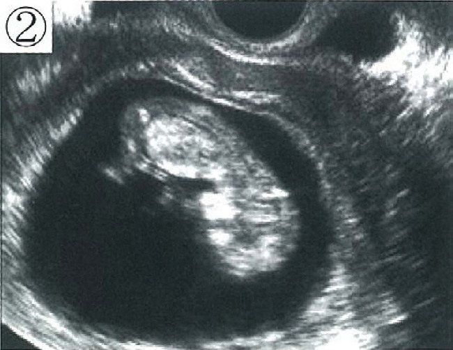

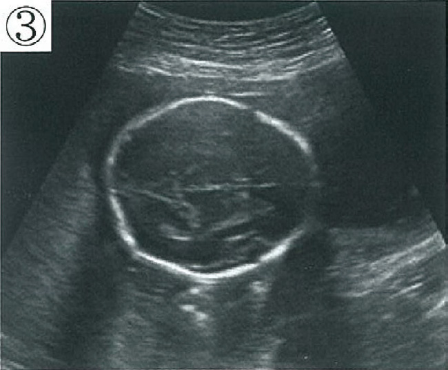
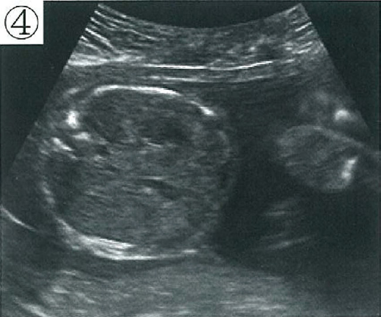
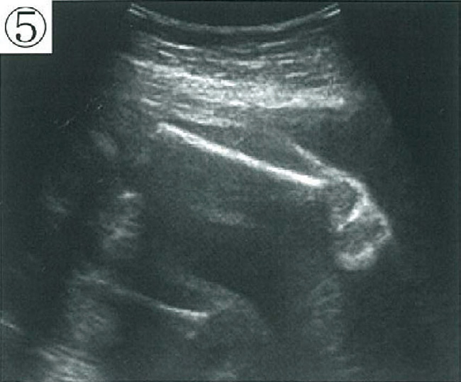
ａ ①
ｂ ②
ｃ ③
ｄ ④
ｅ ⑤
✅
ｃ ③
BPDは透明中隔腔・視床・第三脳室が描出され、小脳が写らない頭部水平断で計測する。
📸 児頭大横径〈BPD〉の標準断面
実際の画像は参照できないため、BPD計測断面の判定基準を示す。描出されるべき構造：
・透明中隔腔〈CSP〉（前方正中）
・視床（左右対称に）
・第三脳室
・大脳半球間裂が正中に一直線
描出されてはいけない構造：小脳・後頭蓋窩（これらが見えたら断面が低すぎる）、眼窩（断面が低すぎ・前方すぎ）
計測は頭蓋骨外側縁から対側の頭蓋骨内側縁まで（outer-inner）、大脳鎌に垂直に行う。
□ 混同しやすい頭部の断面
| 断面 | 目印となる構造 |
|---|---|
| BPD計測断面 | 透明中隔腔・視床・第三脳室（小脳は写らない） |
| 小脳横径〈TCD〉計測断面 | 小脳半球・大槽が描出される（BPDより低い断面） |
| 側脳室計測断面 | 側脳室後角（水頭症の評価） |
| 腹囲〈AC〉計測断面 | 胃胞と臍静脈（門脈臍部）が同一断面。腎は写らない |
| 大腿骨長〈FL〉計測断面 | 大腿骨の骨幹部全長が水平に描出される |
🎯 国試ポイント
BPDは妊娠12週以降に計測可能。妊娠週数の推定に用いるが、週数が進むほど個体差が大きく、分娩予定日の決定は妊娠8〜11週のCRLで行う（Q56参照）。Q.70(105G-13)93%
新生児の循環動態で正しいのはどれか。
ａ 肺血流量は出生後増加する。
ｂ 卵円孔は出生直前に閉鎖する。
ｃ 大動脈拡張期圧は出生後低下する。
ｄ 肺血管抵抗は体血管抵抗よりも大きい。
ｅ 動脈管は動脈血二酸化炭素分圧の低下によって閉鎖する。
✅
ａ 肺血流量は出生後増加する。
出生後は肺が拡張して肺血管抵抗が急激に低下するため、肺血流量が増加する。
🫀 胎児循環から新生児循環への移行
出生後の変化：① 第一呼吸で肺が拡張 → 肺血管抵抗が急激に低下 → 肺血流量が増加
② 臍帯結紮で低抵抗の胎盤循環が消失 → 体血管抵抗が上昇（大動脈圧・拡張期圧も上昇）
③ 肺静脈還流の増加により左房圧＞右房圧 → 卵円孔が機能的に閉鎖
④ 動脈血酸素分圧の上昇＋PGE₂の減少 → 動脈管が収縮（機能的閉鎖：生後10〜15時間、解剖学的閉鎖：生後2〜3週）
⑤ 静脈管は生後数日で閉鎖（→ 静脈管索）
□ 選択肢の検討
| 選択肢 | 評価 |
|---|---|
| ａ 肺血流量は出生後増加する。 | 正しい |
| ｂ 卵円孔は出生直前に閉鎖する。 | 誤り。卵円孔は出生後に左房圧＞右房圧となって機能的閉鎖。出生前に閉鎖すると胎児循環が破綻し胎児水腫・死亡に至る |
| ｃ 大動脈拡張期圧は出生後低下する。 | 誤り。胎盤（低抵抗回路）の離脱で体血管抵抗↑ → 大動脈拡張期圧は上昇 |
| ｄ 肺血管抵抗は体血管抵抗よりも大きい。 | 誤り。これは胎児期の状態。出生後は肺血管抵抗＜体血管抵抗となる |
| ｅ 動脈管は動脈血二酸化炭素分圧の低下によって閉鎖する。 | 誤り。動脈管の収縮を促すのは動脈血酸素分圧〈PaO₂〉の上昇とPGE₂の減少。CO₂分圧ではない |
🎯 国試ポイント
動脈管の開閉を薬物で制御する：・閉じたい（未熟児動脈管開存症）→ インドメタシン・イブプロフェン（PG合成阻害）
・開けたい（動脈管依存性心疾患）→ プロスタグランジンE₁製剤
Q.71(105G-16)70%
妊娠を疑う所見でないのはどれか。
ａ 浮 腫
ｂ 無月経
ｃ 乳房腫大
ｄ 悪心・嘔吐
ｅ 皮膚色素沈着
✅
ａ 浮 腫
浮腫は妊娠後期に生理的に出現しうるが、妊娠を疑わせる特異的な徴候ではない。
🤰 妊娠の徴候
不確徴（推定徴候）：妊婦の自覚症状・他覚所見だが妊娠に特異的でないもの・無月経（最も重要な初発症状）
・悪心・嘔吐（つわり）
・乳房腫大・乳輪の色素沈着（Montgomery腺の腫大）
・皮膚色素沈着（乳頭・乳輪・外陰部・正中線＝黒線、肝斑）
・頻尿、便秘、易疲労感
確徴：胎児そのものを確認するもの
・超音波での胎児（心拍動）の確認、胎児心音の聴取、胎動の触知、胎児部分の触知
浮腫は妊娠後期に増大子宮による下大静脈圧迫・膠質浸透圧低下で生理的に生じうるが、心不全・腎不全・低栄養など多くの病態で起こり妊娠を疑わせる所見ではない。むしろ高血圧・蛋白尿を伴えば妊娠高血圧腎症を疑う所見となる。
□ 選択肢の検討
| 選択肢 | 評価 |
|---|---|
| ａ 浮腫 | 妊娠を疑う所見ではない（後期に生理的に出現しうるが非特異的） |
| ｂ 無月経 | 不確徴。妊娠を疑う最初の契機 |
| ｃ 乳房腫大 | 不確徴。エストロゲン・プロゲステロンによる |
| ｄ 悪心・嘔吐 | 不確徴。いわゆる「つわり」（妊娠5〜6週から） |
| ｅ 皮膚色素沈着 | 不確徴。MSH・エストロゲンによるメラニン産生亢進 |
Q.72(104B-39)89%
妊娠について正しいのはどれか。
ａ 着床は受精後2 日目に起こる。
ｂ 子宮外妊娠では卵巣妊娠が最も多い。
ｃ 自然妊娠における流産率は10 ～15％である。
ｄ 妊娠36 週6 日の分娩は正期産である。
ｅ 妊娠41 週6 日の分娩は過期産である。
✅
ｃ 自然妊娠における流産率は10 ～15％である。
自然妊娠の流産率は約10〜15%で、その大半は妊娠12週未満の早期流産（原因は胎児染色体異常）である。
📊 妊娠の基本数値
流産：妊娠22週未満の妊娠中断。自然妊娠での頻度は約10〜15%。うち約80%が妊娠12週未満の早期流産で、その主因は胎児の染色体異常（偶発的）。母体年齢とともに増加する。分娩時期の定義：
・流産：妊娠22週未満
・早産：妊娠22週0日〜36週6日
・正期産：妊娠37週0日〜41週6日
・過期産：妊娠42週0日以降
異所性妊娠：全妊娠の約1%。部位別では卵管妊娠が約95%（うち膨大部が最多）、次いで間質部・卵巣・腹腔・頸管。
□ 選択肢の検討
| 選択肢 | 評価 |
|---|---|
| ａ 着床は受精後2 日目に起こる。 | 誤り。着床は受精後6〜7日（胚盤胞期） |
| ｂ 子宮外妊娠では卵巣妊娠が最も多い。 | 誤り。最多は卵管妊娠（約95%） |
| ｃ 自然妊娠における流産率は10 ～15％である。 | 正しい |
| ｄ 妊娠36 週6 日の分娩は正期産である。 | 誤り。早産（正期産は37週0日から） |
| ｅ 妊娠41 週6 日の分娩は過期産である。 | 誤り。正期産（過期産は42週0日から） |
💡 覚え方
週数の区切りは「22・37・42」。22週未満＝流産／22〜36週＝早産／37〜41週＝正期産／42週〜＝過期産。「41週6日はまだ正期産」「36週6日はもう早産」と境界の1日を問う出題が多い。
Q.73(104E-16)85%
胎児付属物について正しいのはどれか。
ａ 羊水は弱酸性である。
ｂ 臍帯動脈は1 本である。
ｃ 癒着胎盤は初妊婦に多い。
ｄ 1 絨毛膜2 羊膜双胎は1 卵性双胎である。
ｅ 胎盤絨毛細胞性合胞体細胞は胎児血と接する。
✅
ｄ 1 絨毛膜2 羊膜双胎は1 卵性双胎である。
1絨毛膜双胎は必ず1卵性であり、1つの受精卵が胚盤胞期以降に分裂したものである。
👯 双胎の卵性と膜性
2卵性双胎：2個の卵子がそれぞれ受精。必ず2絨毛膜2羊膜〈DD〉。1卵性双胎：1個の受精卵が分裂。分裂時期により膜性が決まる。
・受精後3日以内（桑実胚期まで）に分裂 → DD双胎（約25%）
・受精後4〜7日（胚盤胞期）に分裂 → MD双胎（1絨毛膜2羊膜）（約75%）
・受精後8〜13日（羊膜形成後）に分裂 → MM双胎（1絨毛膜1羊膜）（約1%）
・受精後13日以降に分裂 → 結合双胎
したがって「1絨毛膜」であれば必ず1卵性だが、「2絨毛膜」は1卵性のことも2卵性のこともある（Q81の選択肢ｂの誤りはここ）。
□ 選択肢の検討
| 選択肢 | 評価 |
|---|---|
| ａ 羊水は弱酸性である。 | 誤り。弱アルカリ性（pH 7.0〜8.5） |
| ｂ 臍帯動脈は1 本である。 | 誤り。動脈2本＋静脈1本 |
| ｃ 癒着胎盤は初妊婦に多い。 | 誤り。癒着胎盤の危険因子は帝王切開既往・子宮内膜掻爬既往・前置胎盤・多産。初妊婦に多いわけではない |
| ｄ 1 絨毛膜2 羊膜双胎は1 卵性双胎である。 | 正しい |
| ｅ 胎盤絨毛細胞性合胞体細胞は胎児血と接する。 | 誤り。合胞体栄養膜細胞は絨毛の最外層で母体血（絨毛間腔）と接する |
🎯 国試ポイント
1絨毛膜（MD・MM）双胎は胎盤を共有するため双胎間輸血症候群〈TTTS〉のリスクがあり、2週ごとの厳重な超音波管理を要する。膜性診断は妊娠10〜14週が最も正確（λ sign／T sign）。
Q.74(104H-1)93%
妊娠経過で異常なのはどれか。
ａ 妊娠10 週で妊娠悪阻がある。
ｂ 妊娠18 週で胎動を感じない。
ｃ 妊娠32 週で推定胎児体重が1,000g である。
ｄ 妊娠36 週で羊水指数〈AFI〉が10cm である。
ｅ 妊娠38 週で子宮口が2cm 開大している。
✅
ｃ 妊娠32 週で推定胎児体重が1,000g である。
妊娠32週の胎児推定体重の基準は約1,800gであり、1,000gは胎児発育不全〈FGR〉を示す。
📏 胎児推定体重〈EFW〉の目安
妊娠22週＝約500g（生存限界）妊娠28週＝約1,000g
妊娠32週＝約1,800g
妊娠36週＝約2,500g
妊娠40週＝約3,000g
妊娠32週で1,000gは妊娠28週相当（−1.5SDを大きく下回る）であり、胎児発育不全〈FGR〉と判断される。原因として胎盤機能不全・妊娠高血圧症候群・胎児染色体異常・子宮内感染（TORCH）・母体喫煙などを検索する。
□ 選択肢の検討
| 選択肢 | 評価 |
|---|---|
| ａ 妊娠10 週で妊娠悪阻がある。 | 正常範囲。つわりはhCGのピーク（8〜10週）と一致 |
| ｂ 妊娠18 週で胎動を感じない。 | 正常範囲。胎動初覚は初産婦で20週前後 |
| ｃ 妊娠32 週で推定胎児体重が1,000g である。 | 異常。32週の基準は約1,800g → FGR |
| ｄ 妊娠36 週で羊水指数〈AFI〉が10cm である。 | 正常。AFIの正常は5〜24cm |
| ｅ 妊娠38 週で子宮口が2cm 開大している。 | 正常範囲。正期産期には子宮頸管の熟化が進む |
🎯 国試ポイント
FGRの定義は推定体重が同週数の平均−1.5SD未満。分類：symmetrical（均衡型）＝染色体異常・先天感染（早期からの障害）／asymmetrical（不均衡型）＝胎盤機能不全（頭部は保たれ腹囲が小さい＝brain sparing effect）。
Q.75(103B-36)72%
超音波画像下に観察が可能な胎児の運動・機能と時期の組合せで誤っているのはどれか。
ａ 心拍動 ─────────── 妊娠10 週
ｂ 呼吸様運動 ──────── 妊娠12 週
ｃ 四肢運動 ────────── 妊娠15 週
ｄ 排尿行動 ───────── 妊娠20 週
ｅ 嚥下運動 ────────── 妊娠30 週
✅
ｂ 呼吸様運動 ──────── 妊娠12 週
各選択肢はその週数で観察可能かを問うており、胎児呼吸様運動は妊娠12週では観察できない（妊娠20週前後から）。
👶 超音波で観察できる胎児の運動・機能
それぞれの選択肢の週数で「観察可能かどうか」を判定する問題である。心拍動：妊娠6〜7週から確認できる → 妊娠10週では当然観察可能
四肢運動：妊娠8〜9週から → 妊娠15週では当然観察可能
呼吸様運動：横隔膜が周期的に動く運動。超音波で安定して観察できるのは妊娠20週前後からで、規則的なパターンとなるのは妊娠30週以降。妊娠12週では観察できない
排尿行動：胎児腎の尿産生は妊娠9〜12週に始まり、膀胱の充満と排出のサイクルは妊娠20週では明瞭に観察できる
嚥下運動：妊娠12〜16週ころから始まり、妊娠30週では明瞭に観察できる
したがって誤っている組合せはｂ 呼吸様運動 ─ 妊娠12週。
□ 選択肢の検討
| 選択肢 | 評価 |
|---|---|
| ａ 心拍動 ─ 妊娠10 週 | 観察可能。心拍動は妊娠6〜7週から |
| ｂ 呼吸様運動 ─ 妊娠12 週 | 観察できない。呼吸様運動が観察されるのは妊娠20週前後から |
| ｃ 四肢運動 ─ 妊娠15 週 | 観察可能。四肢運動は妊娠8〜9週から |
| ｄ 排尿行動 ─ 妊娠20 週 | 観察可能。尿産生は妊娠9〜12週から始まる |
| ｅ 嚥下運動 ─ 妊娠30 週 | 観察可能。嚥下は妊娠12〜16週から |
🎯 国試ポイント
biophysical profile score〈BPS〉の5項目は胎児呼吸様運動・胎動・筋緊張・羊水量・NST（一過性頻脈）。低酸素状態ではこれらが一過性頻脈 → 呼吸様運動 → 胎動 → 筋緊張の順に失われる（中枢神経の成熟が遅い機能から消える）。この「成熟が遅いものほど先に失われる」対応を押さえておくと理解しやすい。
Q.76(103E-29)2択85%
正しいのはどれか。2 つ選べ。
ａ 妊娠反応は尿中hPL の高値を反映したものである。
ｂ 妊娠中の血圧は上昇する。
ｃ 妊娠中のヘモグロビン濃度は上昇する。
ｄ 妊娠中の血中クレアチニン濃度は低下する。
ｅ 赤色悪露に引き続き褐色悪露がみられる。
✅
ｄ 妊娠中の血中クレアチニン濃度は低下する。
ｅ 赤色悪露に引き続き褐色悪露がみられる。
妊娠中はGFR増加でクレアチニンが低下し、産褥期の悪露は赤色→褐色→黄色→白色の順に変化する。
🩸 産褥期の悪露〈lochia〉の変化
赤色悪露（産褥1〜3日）：血液成分が主体。鮮紅色↓
褐色悪露（産褥4〜9日）：赤血球が変性し褐色に
↓
黄色悪露（産褥10日〜3週）：白血球が主体
↓
白色悪露（産褥3〜6週）：粘液が主体。徐々に消失
赤色悪露の遷延・悪臭・発熱があれば胎盤遺残・子宮復古不全・子宮内膜炎を疑う。
□ 選択肢の検討
| 選択肢 | 評価 |
|---|---|
| ａ 妊娠反応は尿中hPL の高値を反映したものである。 | 誤り。妊娠反応が検出するのは尿中hCG（β鎖） |
| ｂ 妊娠中の血圧は上昇する。 | 誤り。末梢血管抵抗低下により中期に最低となる |
| ｃ 妊娠中のヘモグロビン濃度は上昇する。 | 誤り。低下（水血症） |
| ｄ 妊娠中の血中クレアチニン濃度は低下する。 | 正しい。GFRが約50%増加するため |
| ｅ 赤色悪露に引き続き褐色悪露がみられる。 | 正しい |
💡 覚え方
悪露の色は「赤 → 褐 → 黄 → 白」と血液成分が減り白血球・粘液へ移行する順。Q.77(103E-35)78%
先天異常の診断を行う妊娠時期と方法の組合せで正しいのはどれか。
ａ 10 週 ──────────── 羊水穿刺
ｂ 12 週 ─────────── MRI
ｃ 14 週 ──────────── 胎児血採取
ｄ 20 週 ─────────── 超音波検査
ｅ 30 週 ──────────── 絨毛採取
✅
ｄ 20 週 ─────────── 超音波検査
胎児形態異常のスクリーニングとしての超音波検査は妊娠20週前後（18〜22週）に行うのが標準である。
🔬 出生前検査の実施時期
絨毛検査：妊娠11〜14週（それ以前は四肢欠損のリスク、それ以降は羊水検査へ）羊水検査：妊娠15〜16週以降（それ以前は羊水量が少なく流産リスクが高い）
胎児血採取（臍帯穿刺）：妊娠18週以降（それ以前は臍帯が細く穿刺困難）
胎児MRI：妊娠20週以降（それ以前は胎児が小さく体動が多く画質が不十分）
形態異常スクリーニングの超音波：妊娠18〜22週（20週前後）が標準
NIPT：妊娠10週以降
母体血清マーカー：妊娠15〜18週
□ 選択肢の検討
| 選択肢 | 評価 |
|---|---|
| ａ 10 週 ─ 羊水穿刺 | 誤り。羊水検査は15〜16週以降 |
| ｂ 12 週 ─ MRI | 誤り。胎児MRIは20週以降 |
| ｃ 14 週 ─ 胎児血採取 | 誤り。臍帯穿刺は18週以降 |
| ｄ 20 週 ─ 超音波検査 | 正しい。形態異常スクリーニングの標準時期 |
| ｅ 30 週 ─ 絨毛採取 | 誤り。絨毛検査は11〜14週（30週では絨毛＝胎盤を穿刺することになる） |
💡 覚え方
侵襲的検査の時期は「絨毛11〜14週 → 羊水15〜16週〜 → 臍帯血18週〜」と週数順に並ぶ。週数が進むほど胎児が大きくなり、採取できる検体が変わっていくと考えればよい。Q.78(103G-9)73%
異常所見はどれか。
ａ 妊娠8 週で超音波検査上胎児心拍動を認める。
ｂ 妊娠20 週で胎動を自覚できない。
ｃ 妊娠28 週で胎児推定体重が600g である。
ｄ 妊娠30 週で羊水指数〈AFI〉が10cm である。
ｅ 妊娠36 週で児頭大横径〈BPD〉が90mm である。
✅
ｃ 妊娠28 週で胎児推定体重が600g である。
妊娠28週の胎児推定体重の基準は約1,000gであり、600gは胎児発育不全〈FGR〉を示す。
📏 胎児推定体重の基準（再掲）
妊娠22週＝約500g／妊娠28週＝約1,000g／妊娠32週＝約1,800g／妊娠36週＝約2,500g／妊娠40週＝約3,000g妊娠28週で600gは妊娠23〜24週相当で−1.5SDを大きく下回りFGR。胎盤機能不全・妊娠高血圧症候群・染色体異常・先天感染などを検索し、臍帯動脈血流波形・BPS・NSTで胎児well-beingを評価する。
□ 選択肢の検討
| 選択肢 | 評価 |
|---|---|
| ａ 妊娠8 週で超音波検査上胎児心拍動を認める。 | 正常。心拍動は6〜7週から確認できる |
| ｂ 妊娠20 週で胎動を自覚できない。 | 正常範囲。初産婦の胎動初覚は20週前後 |
| ｃ 妊娠28 週で胎児推定体重が600g である。 | 異常。28週の基準は約1,000g → FGR |
| ｄ 妊娠30 週で羊水指数〈AFI〉が10cm である。 | 正常。AFIの正常は5〜24cm |
| ｅ 妊娠36 週で児頭大横径〈BPD〉が90mm である。 | 正常。36週のBPDは約8.8cm |
Q.79(103H-11)99%
胎児循環で酸素分圧が最も高いのはどれか。
ａ 右心室
ｂ 動脈管
ｃ 上行大動脈
ｄ 下行大動脈
ｅ Arantius 静脈管
✅
ｅ Arantius 静脈管
選択肢の中では静脈管（臍帯静脈から下大静脈へ向かう血液）が最も酸素分圧が高い。
🫀 胎児循環の酸素分圧
| 構造 | 血流方向 | 酸素飽和度 | 意義 |
|---|---|---|---|
| 臍帯静脈（1本） | 胎盤 → 胎児 | 最も高い（SaO₂約80%） | 酸素・栄養を運ぶ |
| 静脈管〈Arantius管〉 | 臍帯静脈 → 下大静脈 | 高い | 肝臓を迂回する |
| 卵円孔 | 右心房 → 左心房 | — | 右→左シャント。高酸素血を脳・心へ |
| 動脈管 | 肺動脈 → 下行大動脈 | 低い | 右→左シャント。肺を迂回する |
| 臍帯動脈（2本） | 胎児 → 胎盤 | 最も低い | 老廃物を胎盤へ返す |
□ 選択肢の検討
| 選択肢 | 酸素分圧 |
|---|---|
| ａ 右心室 | 低い。上大静脈からの低酸素血が主体 |
| ｂ 動脈管 | 低い。右心室 → 肺動脈からの血流 |
| ｃ 上行大動脈 | やや高い。卵円孔経由の高酸素血が左心室から拍出される |
| ｄ 下行大動脈 | 低い。動脈管からの低酸素血が合流して低下する |
| ｅ Arantius 静脈管 | 最も高い。臍帯静脈血（SaO₂約80%）がそのまま流れる |
💡 覚え方
酸素分圧の順は臍帯静脈＝静脈管 ＞ 左心系（上行大動脈・脳） ＞ 右心系（肺動脈・動脈管・下行大動脈） ＞ 臍帯動脈。「胎盤で酸素をもらった血がどこまで薄まらずに届くか」を追えばよい。上行大動脈（脳・冠動脈）が優先的に高酸素血を受けるのが胎児循環の設計思想。
Q.80(102B-33)55%
正しいのはどれか。
ａ 卵胞数は思春期に最大となる。
ｂ 原始卵胞は卵とそれを取り囲む多層の顆粒膜細胞とからなる。
ｃ 原始卵胞から1 次卵胞への発育にFSH が必須である。
ｄ 成熟卵胞には卵胞腔が存在する。
ｅ 排卵直前には卵胞の直径は約5mm になる。
✅
ｄ 成熟卵胞には卵胞腔が存在する。
成熟卵胞（Graaf卵胞）は卵胞液で満たされた卵胞腔をもつ。
🥚 卵胞の発育段階
原始卵胞：1個の卵母細胞を単層扁平の顆粒膜細胞が取り囲む。ゴナドトロピン非依存性に発育を開始する（FSHは必須ではない）一次卵胞：顆粒膜細胞が単層立方となる
二次卵胞（前胞状卵胞）：顆粒膜細胞が多層化、莢膜細胞が出現
胞状卵胞：卵胞腔（卵胞液を含む腔）が出現。ここからFSH依存性となる
成熟卵胞〈Graaf卵胞〉：卵胞腔が大きく発達し、直径約20mmに達して排卵する
卵胞数は胎生20週ころ約700万個で最大、出生時約200万個、思春期約30万個と一貫して減少し続ける（増えることはない）。
□ 選択肢の検討
| 選択肢 | 評価 |
|---|---|
| ａ 卵胞数は思春期に最大となる。 | 誤り。最大は胎生20週ころ（約700万個） |
| ｂ 原始卵胞は卵とそれを取り囲む多層の顆粒膜細胞とからなる。 | 誤り。原始卵胞の顆粒膜細胞は単層扁平。多層化するのは二次卵胞から |
| ｃ 原始卵胞から1 次卵胞への発育にFSH が必須である。 | 誤り。この段階はゴナドトロピン非依存性。FSH依存となるのは胞状卵胞以降 |
| ｄ 成熟卵胞には卵胞腔が存在する。 | 正しい |
| ｅ 排卵直前には卵胞の直径は約5mm になる。 | 誤り。排卵直前の主席卵胞は約20mm |
🎯 国試ポイント
卵胞は一生を通じて減少するのみで新生しない（近年議論はあるが国試ではこの立場）。卵巣予備能の指標は抗Müller管ホルモン〈AMH〉（前胞状〜小胞状卵胞の顆粒膜細胞が分泌）。
Q.81(102E-13)81%
胎児付属物について正しいのはどれか。
ａ 前置胎盤は初妊婦に多い。
ｂ 2 絨毛膜2 羊膜双胎は2 卵性双胎である。
ｃ 羊水には胎児肺胞からの分泌物が含まれる。
ｄ 胎盤絨毛細胞性栄養膜細胞は母体血と接する。
ｅ 臍帯静脈の血中酸素分圧は母体子宮動脈よりも高い。
✅
ｃ 羊水には胎児肺胞からの分泌物が含まれる。
羊水には胎児尿のほか、胎児肺から分泌される肺液が含まれる。
💧 羊水の組成と由来
羊水の産生：胎児尿（妊娠中期以降の主体）＋胎児肺液（肺胞からの分泌物）＋羊膜からの分泌＋（妊娠初期は）胎児皮膚からの水分移動羊水の吸収：胎児の嚥下＋卵膜・臍帯を介した母体への移行
胎児肺液は気道から羊水腔へ分泌され、羊水のレシチン/スフィンゴミエリン比〈L/S比〉やマイクロバブルテストで胎児肺成熟度を評価できるのはこのためである。
□ 選択肢の検討
| 選択肢 | 評価 |
|---|---|
| ａ 前置胎盤は初妊婦に多い。 | 誤り。前置胎盤の危険因子は多産・帝王切開既往・子宮内膜掻爬既往・高齢・喫煙・多胎 |
| ｂ 2 絨毛膜2 羊膜双胎は2 卵性双胎である。 | 誤り。DD双胎の約25%は受精後3日以内に分裂した1卵性（Q73参照） |
| ｃ 羊水には胎児肺胞からの分泌物が含まれる。 | 正しい |
| ｄ 胎盤絨毛細胞性栄養膜細胞は母体血と接する。 | 誤り。母体血（絨毛間腔）に接するのは合胞体栄養膜細胞（外層）。細胞性栄養膜細胞〈Langhans細胞〉はその内側 |
| ｅ 臍帯静脈の血中酸素分圧は母体子宮動脈よりも高い。 | 誤り。胎盤での拡散により、臍帯静脈の酸素分圧は母体子宮動脈血より必ず低い（濃度勾配に従って移動するため） |
🎯 国試ポイント
胎児が低い酸素分圧（臍帯静脈PaO₂ 約30mmHg）でも酸素を確保できるのは、① HbFの高い酸素親和性（酸素解離曲線の左方移動）
② 胎児のHb濃度が高い（約17g/dL）
③ 二重Bohr効果 による。
Q.82(102E-14)85%
妊娠中期の妊婦で生理的に減少または低下するのはどれか。
ａ 心拍数
ｂ 呼吸数
ｃ 平均動脈圧
ｄ 循環血液量
ｅ 糸球体濾過量
✅
ｃ 平均動脈圧
妊娠中期は末梢血管抵抗が最も低下する時期で、平均動脈圧が最低となる。
📉 妊娠中期の血圧
プロゲステロン・プロスタサイクリン・NOによる血管拡張で末梢血管抵抗が低下する。心拍出量は増加するが、それを上回る血管抵抗の低下により血圧（特に拡張期血圧）は妊娠中期（20〜24週）に最低となる。
妊娠末期には血管抵抗が戻り、血圧は非妊時のレベルへ回復する。
したがって妊娠20週以降に高血圧（140/90mmHg以上）が出現すれば妊娠高血圧症候群を疑う。妊娠中期にむしろ血圧が下がるという生理を知っていれば、この基準の重みが理解できる。
□ 選択肢の検討
| 選択肢 | 変化 |
|---|---|
| ａ 心拍数 | 増加（10〜20/分↑） |
| ｂ 呼吸数 | ほぼ不変（やや増加）。増えるのは一回換気量 |
| ｃ 平均動脈圧 | 低下（末梢血管抵抗↓。中期に最低） |
| ｄ 循環血液量 | 増加（40〜50%↑） |
| ｅ 糸球体濾過量 | 増加（約50%↑） |
Q.83(101B-48)46%
正しいのはどれか。
ａ 受精は第一減数分裂中期に起こる。
ｂ 卵細胞質内には複数の精子が進入する。
ｃ 受精後に認められる極体は1 個である。
ｄ 着床は受精後3 日目に成立する。
ｅ 初期胚は胚盤胞まで発育し着床する。
✅
ｅ 初期胚は胚盤胞まで発育し着床する。
受精卵は胚盤胞（胞胚）まで発育してから、受精後6〜7日で子宮内膜に着床する。
🥚 受精・着床の要点
① 排卵直前に卵母細胞は第一減数分裂を完了（第1極体放出）し、第二減数分裂中期で停止した状態で排卵される② 精子が進入すると透明帯反応・卵細胞膜反応（多精子受精の阻止）が起こり、1個の精子のみが受精する
③ 受精の刺激で第二減数分裂が完了（第2極体放出）
→ 受精後に認められる極体は第1極体と第2極体の計2個
④ 卵割を繰り返し桑実胚（受精後3〜4日）→ 胚盤胞〈胞胚〉（受精後4〜5日）
⑤ 受精後6〜7日に子宮内膜へ着床（妊娠3週ころ）
□ 選択肢の検討
| 選択肢 | 評価 |
|---|---|
| ａ 受精は第一減数分裂中期に起こる。 | 誤り。受精時の卵は第二減数分裂中期で停止している |
| ｂ 卵細胞質内には複数の精子が進入する。 | 誤り。透明帯反応・卵細胞膜反応により多精子受精は阻止される |
| ｃ 受精後に認められる極体は1 個である。 | 誤り。第1極体＋第2極体で2個 |
| ｄ 着床は受精後3 日目に成立する。 | 誤り。着床は受精後6〜7日 |
| ｅ 初期胚は胚盤胞まで発育し着床する。 | 正しい |
🎯 国試ポイント
体外受精〈IVF〉における胚移植は、初期胚（分割期胚、採卵後2〜3日）または胚盤胞（採卵後5〜6日）の段階で行う。胚盤胞移植のほうが着床率が高い（生体内での着床時期に一致するため）。Q.84(101B-49)2択84%
正しいのはどれか。2 つ選べ。
ａ 絨毛間腔は母体血が循環する。
ｂ 脱落膜は胎児由来の組織である。
ｃ 羊水量は胎児腎機能と関連する。
ｄ 胎盤の構造は妊娠24 週で完成する。
ｅ 胎盤重量は妊娠末期で平均800g である。
✅
ａ 絨毛間腔は母体血が循環する。
ｃ 羊水量は胎児腎機能と関連する。
絨毛間腔は母体血で満たされ、妊娠中期以降の羊水の主体は胎児尿なので羊水量は胎児腎機能を反映する。
🫧 胎盤の血液循環と羊水
絨毛間腔：母体のらせん動脈から噴出した血液が満たす空間。ここに胎児由来の絨毛が浸り、絨毛表層の合胞体栄養膜細胞を介してガス・栄養が交換される。母児の血液は直接混じらない（血絨毛胎盤）。羊水量：妊娠中期以降の羊水はほぼ胎児尿であり、産生（胎児尿・肺液）と吸収（胎児の嚥下）のバランスで決まる。
・羊水過少 → 腎無形成〈Potter症候群〉・尿路閉塞・胎盤機能不全・破水
・羊水過多 → 食道／十二指腸閉鎖・無脳症（嚥下障害）・母体糖尿病
□ 選択肢の検討
| 選択肢 | 評価 |
|---|---|
| ａ 絨毛間腔は母体血が循環する。 | 正しい |
| ｂ 脱落膜は胎児由来の組織である。 | 誤り。脱落膜は母体（子宮内膜）由来 |
| ｃ 羊水量は胎児腎機能と関連する。 | 正しい |
| ｄ 胎盤の構造は妊娠24 週で完成する。 | 誤り。胎盤の完成は妊娠15〜16週 |
| ｅ 胎盤重量は妊娠末期で平均800g である。 | 誤り。約500g（児体重の約1/6） |
Q.85(101C-20)
胎児発育に必須の胎児臓器はどれか。
ａ 脳
ｂ 肺
ｃ 心 臓
ｄ 小 腸
ｅ 腎 臓
✅
ｃ 心 臓
胎児期は胎盤が肺・腎・消化管・肝の機能を代行するが、循環を維持する心臓だけは代行できない。
🫀 胎盤が代行する機能・代行できない機能
胎児は胎盤を介して母体とやりとりするため、多くの臓器の機能を胎盤が代行できる。胎盤が代行できる：
・肺（ガス交換）→ 肺の欠損・低形成でも子宮内では生存しうる
・腎（老廃物の排泄）→ 腎無形成でも子宮内では生存できる（ただし羊水過少 → Potter症候群）
・消化管（栄養吸収）→ 食道閉鎖・十二指腸閉鎖でも子宮内発育は保たれる
・肝（代謝・解毒）→ 母体肝が代行
・脳？→ 無脳症でも子宮内では発育し生存できる（出生後に死亡）
胎盤が代行できない：
・心臓（循環ポンプ）。胎児自身が血液を胎盤へ送り返さなければ物質交換が成立しない。したがって心臓は胎児発育に必須の唯一の臓器である。
□ 選択肢の検討
| 選択肢 | 評価 |
|---|---|
| ａ 脳 | 必須ではない。無脳症でも子宮内発育は可能 |
| ｂ 肺 | 必須ではない。ガス交換は胎盤が代行 |
| ｃ 心臓 | 必須。循環ポンプは代行できない |
| ｄ 小腸 | 必須ではない。栄養は胎盤から供給される |
| ｅ 腎臓 | 必須ではない。排泄は胎盤が代行（ただし羊水過少をきたす） |
🎯 国試ポイント
この「胎盤が代行する」という視点は、先天異常が出生後に初めて顕在化する（子宮内では代償されている）理由の説明になる。例：先天性横隔膜ヘルニア・食道閉鎖・完全大血管転位症は出生直後から症状が出るが、子宮内では発育に問題がない。